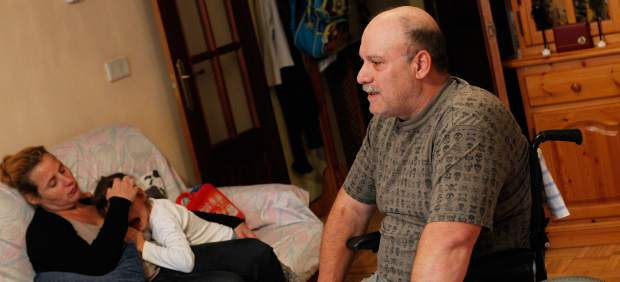
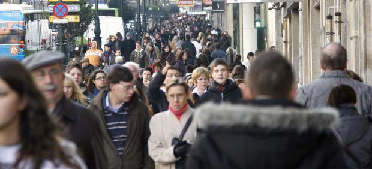
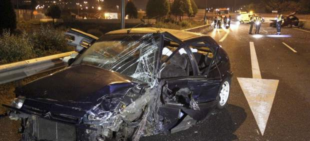
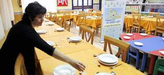
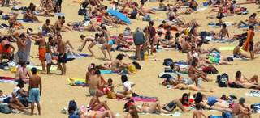
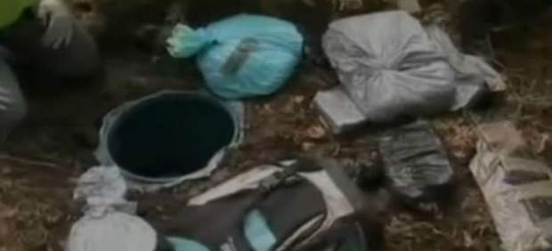

2012-11-19T18:14:45Z
El Gobierno de Castilla-La Mancha ofrece a la familia de Teo una vivienda de protección oficial
El Gobierno de Castilla-La Mancha ofrece a la familia de Teo una vivienda de protección oficial
JUANMA LÓPEZ-GUILLÉN
Teodoro Expósito, parapléjico de 52 años que vive en Toledo, explicó a '20 minutos' a principios de octubre la situación crítica que vive su familia.
Los recortes en dependencia le afectan directamente, pero también a Marcos y Jenifer, sus dos hijos enfermos.
Más de un centenar de lectores de este periódico se pusieron en contacto con la familia para echarles una mano.
Teodoro Expósito, un parapléjico de 52 años que vive en Toledo, explicó a 20 minutos a principios de octubre la situación crítica que vive su familia. Los recortes en dependencia le afectan directamente, pero también a sus dos hijos enfermos. Poco después de conocerse la noticia, más de un centenar de lectores de este periódico se pusieron en contacto con la familia para echarles una mano.El pasado 1 de octubre Teo denunció que iba a perder su vivienda debido a que las ayudas en dependencia se habían reducido tanto que no podían seguir pagándola. Además de a Teo, la situación afectaba a su mujer y sus dos hijos: Marcos, en estado vegetativo casi de nacimiento por culpa de una meningitis, y Jenifer, que padece una parálisis cerebral. Al conocer la noticia, los lectores de 20 minutos se volcaron con esta familia y les enviaron, tras ponerse en contacto con este periódico, pequeñas aportaciones mensuales, envíos de comida, ayudas a domicilio... Mes y medio más tarde, la Consejería de Fomento de Castilla-La Mancha ha escuchado sus plegarias y les ha concedido una Vivienda de Protección Oficial (VPO).Teo y los suyos conocieron la noticia este domingo y verán la vivienda que tiene cuatro habitaciones y está situada en la ciudad de Toledo este mismo martes. Según explicaron a este diario fuentes del Gobierno manchego (PP), Teo pasará de pagar de los casi 700 euros mensuales que costaba el alquiler del piso en anterior, a unos 400.Un fallo burocrático del PSOE, según el PPSegún estas fuentes, la familia de Teodoro no ha recibido antes la casa porque la solicitud fue presentada el pasado mes de julio. Aseguran que el antiguo Gobierno (PSOE) dio de baja la solicitud presentada por Teodoro en 2007. Según cuentan, Teo volvió a dar de alta la solicitud en julio y, finalmente, meses después ha logrado una vivienda.
JUANMA LÓPEZ-GUILLÉN
- Teodoro Expósito, parapléjico de 52 años que vive en Toledo, explicó a '20 minutos' a principios de octubre la situación crítica que vive su familia.
- Los recortes en dependencia le afectan directamente, pero también a Marcos y Jenifer, sus dos hijos enfermos.
- Más de un centenar de lectores de este periódico se pusieron en contacto con la familia para echarles una mano.

Teodoro Expósito, un parapléjico de 52 años que vive en Toledo, explicó a 20 minutos a principios de octubre la situación crítica que vive su familia. Los recortes en dependencia le afectan directamente, pero también a sus dos hijos enfermos. Poco después de conocerse la noticia, más de un centenar de lectores de este periódico se pusieron en contacto con la familia para echarles una mano.
El pasado 1 de octubre Teo denunció que iba a perder su vivienda debido a que las ayudas en dependencia se habían reducido tanto que no podían seguir pagándola. Además de a Teo, la situación afectaba a su mujer y sus dos hijos: Marcos, en estado vegetativo casi de nacimiento por culpa de una meningitis, y Jenifer, que padece una parálisis cerebral.
Al conocer la noticia, los lectores de 20 minutos se volcaron con esta familia y les enviaron, tras ponerse en contacto con este periódico, pequeñas aportaciones mensuales, envíos de comida, ayudas a domicilio... Mes y medio más tarde, la Consejería de Fomento de Castilla-La Mancha ha escuchado sus plegarias y les ha concedido una Vivienda de Protección Oficial (VPO).
Teo y los suyos conocieron la noticia este domingo y verán la vivienda que tiene cuatro habitaciones y está situada en la ciudad de Toledo este mismo martes. Según explicaron a este diario fuentes del Gobierno manchego (PP), Teo pasará de pagar de los casi 700 euros mensuales que costaba el alquiler del piso en anterior, a unos 400.
Un fallo burocrático del PSOE, según el PP
Según estas fuentes, la familia de Teodoro no ha recibido antes la casa porque la solicitud fue presentada el pasado mes de julio. Aseguran que el antiguo Gobierno (PSOE) dio de baja la solicitud presentada por Teodoro en 2007. Según cuentan, Teo volvió a dar de alta la solicitud en julio y, finalmente, meses después ha logrado una vivienda.
2012-11-19T13:30:19Z
La Agencia Estatal de Meteorología comenzará a cobrar mañana por el acceso a sus datos
La Agencia Estatal de Meteorología comenzará a cobrar mañana por el acceso a sus datos
EFE
Los precios irán de 0,019 euros a 46 euros, dependiendo de la información meteorológica de que se trate.
Organismos científicos y las Fuerzas Armadas no deberán pagar por el servicio.
La Agencia Estatal de Meteorología (Aemet) comenzará a aplicar desde el martes la orden ministerial que le obliga a cobrar por el acceso a millones de datos, aunque no afectará a los de carácter general (nivel usuario) que seguirán siendo gratuitos en su web.Con ello, la agencia pública adapta su política de precios a un informe publicado este año por la Intervención del Estado, donde se le exhorta a cumplir una orden ministerial de 2006 sobre la regulación de las prestaciones sujetas al régimen de precios públicos, ha dicho a Efe el portavoz de la Aemet, Alejandro Lomas.La misma orden, ha añadido, establece una serie de exclusiones al cobro de estos datos "en bruto", de valor eminentemente científico, como el apoyo prestado a las Fuerzas Armadas y la Defensa Nacional, y el suministro de prestaciones a los organismos de investigación en la realización de proyectos no lucrativos.El precio unitario por información puede oscilar entre los 0,019 euros de un dato descodificado del tiempo a dos euros por valores horarios de variables climatológicos, los 16 euros en el caso de una imagen de la temperatura del mar o bien los 46 euros por conocer las horas de frío.En opinión del portavoz de la Aemet, la recaudación de lo obtenido que no ha podido estimar en ningún caso servirá para cubrir el coste real de lo que cuesta conseguir un dato.
EFE
- Los precios irán de 0,019 euros a 46 euros, dependiendo de la información meteorológica de que se trate.
- Organismos científicos y las Fuerzas Armadas no deberán pagar por el servicio.
La Agencia Estatal de Meteorología (Aemet) comenzará a aplicar desde el martes la orden ministerial que le obliga a cobrar por el acceso a millones de datos, aunque no afectará a los de carácter general (nivel usuario) que seguirán siendo gratuitos en su web.
Con ello, la agencia pública adapta su política de precios a un informe publicado este año por la Intervención del Estado, donde se le exhorta a cumplir una orden ministerial de 2006 sobre la regulación de las prestaciones sujetas al régimen de precios públicos, ha dicho a Efe el portavoz de la Aemet, Alejandro Lomas.
La misma orden, ha añadido, establece una serie de exclusiones al cobro de estos datos "en bruto", de valor eminentemente científico, como el apoyo prestado a las Fuerzas Armadas y la Defensa Nacional, y el suministro de prestaciones a los organismos de investigación en la realización de proyectos no lucrativos.
El precio unitario por información puede oscilar entre los 0,019 euros de un dato descodificado del tiempo a dos euros por valores horarios de variables climatológicos, los 16 euros en el caso de una imagen de la temperatura del mar o bien los 46 euros por conocer las horas de frío.
En opinión del portavoz de la Aemet, la recaudación de lo obtenido que no ha podido estimar en ningún caso servirá para cubrir el coste real de lo que cuesta conseguir un dato.
2012-11-19T10:26:48Z
España perderá una décima parte de su población en 40 años
España perderá una décima parte de su población en 40 años
EFE / VÍDEO: ATLAS
Esta situación que comenzará a notarse en 2018, año en el que ya habrá más defunciones que nacimientos.
Dentro de 40 años, el 37,7% de la población tendrá más de 64 años.
España perderá población en 2012 por primera vez desde 1981.
En los próximos cuarenta años nacerán en España 14,6 millones de niños, un 24% menos que en los anteriores cuarenta años.
En la próxima década solo Baleares, Canarias, Murcia y Andalucía, Ceuta y Melilla ganarán población.
A FONDO: ¿Es el envejecimiento demográfico un problema?
La tendencia demográfica española hará que dentro de cuarenta años haya desaparecido la décima parte de la población, una situación que comenzará a notarse en 2018, año en el que, por primera vez, ya habrá más defunciones que nacimientos.Estos datos se desprenden de las últimas Proyecciones de Población difundidas por el Instituto Nacional de Estadística (INE), que revelan un escenario de pérdida progresiva de habitantes en las próximas décadas.Así, en 2022 España contará con 45 millones de habitantes, un 2,5% menos que este año, cifra que en 2052 se situará en 41,5 millones, un 10,2% menos que en la actualidad (46,2 millones), al tiempo que el 37 % de la población tendrá más de 64 años.Según los cálculos del INE, España perderá más de un millón de habitantes por década según los datos de las últimas Proyecciones de Población.Respecto a la evolución de nacimientos y defunciones, el INE estima que en 2021 nacerán 375.159 niños, un 20% menos que en 2011 y que hasta 2031 lo harán 7,7 millones de niños, un 9% menos que en los últimos veinte años.El descenso de nacimientos será consecuencia de la evolución de la pirámide poblacional y, por lo tanto, de la progresiva reducción de mujeres en edad fértil.Natalidad y esperanza de vida
El número de nacidos no volverá a crecer hasta 2030, una vez superado el efecto de la crisis de natalidad de los años 80 y primeros 90 sobre la pirámide poblacional femenina, para volver a decrecer a partir de 2040.En cualquier caso, en los próximos cuarenta años nacerán en España 14,6 millones de niños, un 24% menos que en los anteriores cuarenta años y el INE advierte de que esta evolución de la natalidad se producirá aunque la fecundidad mantenga la tendencia "ligeramente favorable" de la última década.Así, dentro de veinte años, el número de hijos por mujer será de 1,51 y de 1,56 en cuarenta, frente a los 1,36 de 2011, mientras que la edad media de maternidad continuará ascendiendo hasta situarse en 31,5 años en 2051.También seguirá aumentando la esperanza de vida, que en 2051 se situará en 86,9 años para los hombres y en 90,7 años para las mujeres, es decir casi ocho y seis años, respectivamente, más que ahora.Estas cifras reducen en dos años la diferencia entre la esperanza de vida femenina y la masculina respecto a la actual.El incremento de la esperanza de vida dará lugar a una población más envejecida y a un aumento de defunciones de modo que en los próximos cuarenta años morirán en España 17,9 millones de personas, un 34% más que en los últimos cuarenta.Con estos datos, el INE calcula que la diferencia entre nacimientos y defunciones será negativa desde 2018.Flujos migratoriosTambién el saldo migratorio volverá a ser negativo este año en 181.479 personas, frente a las 50.090 de 2011, consecuencia de la caída del 17,7 % en la llegada de inmigrantes (376.696) y el aumento del 9,9 % de quienes saldrán de España (558.175).En este caso, el INE calcula que el flujo inmigratorio crecerá en los próximos años y que en la próxima década España recibirá 3,9 millones de inmigrantes y en cuarenta años 16,7 millones.La mayor parte de los inmigrantes procederán de la Unión Europea (4,9 millones) y Sudamérica y África se mantendrán como los otros dos grandes puntos de origen (con 3,8 y 3,5 millones, respectivamente), mientras que los procedentes de África aumentarán en los próximos años.Además, el INE subraya que la actual tendencia a emigrar al extranjero se prolongará y hará que en los próximos diez años 5,2 millones de personas abandonen España y 18,1 millones lo hagan en los próximos cuarenta.Estas cifras harán que en las próximas cuatro décadas la población española pierda 1,4 millones de personas.Las proyecciones elaboradas por el INE muestran el continuo envejecimiento de la población de modo que en 2052 los mayores de 64 años se incrementarán en 7,2 millones de personas y representarán el 37% de la población, al tiempo que se perderán 9,9 millones de personas entre 16 y 64 años, y casi dos millones de las de 0 a 15 años.Tasa de dependenciaUno de los problemas del envejecimiento de la población será el aumento de la tasa de dependencia que en 2022, es decir dentro de tan sólo diez años, será del 58%, lo que implicará que por cada diez personas en edad de trabajar habrá seis inactivas.Según estos datos, dentro de cuarenta años la tasa de dependencia será del 99%, lo que quiere decir que por cada persona en edad de trabajar habrá otra inactiva.Por comunidades autónomas, el INE calcula que todas perderán población en la próxima década, excepto las Islas Baleares, Canarias, Murcia y Andalucía y las ciudades autónomas de Ceuta y Melilla.Respecto al saldo migratorio con el extranjero, será negativo al final de la próxima década en casi todas las regiones, especialmente en Cataluña (472.549), Madrid (381.632) y Comunidad Valenciana (140.171)Este año por primera vez desde 1981El número de población en España descenderá este año por primera vez desde 1981, al pasar de los 46.196.278 millones (a 1 de enero de 2012) a los 46.094.454 proyectados por el Instituto Nacional de Estadística (INE) para el 1 de enero de 2013. Esta cifra alcanzaría en 2052 los 41,5 millones de habitantes, un 10,2% menos que en este 2012.
EFE / VÍDEO: ATLAS
- Esta situación que comenzará a notarse en 2018, año en el que ya habrá más defunciones que nacimientos.
- Dentro de 40 años, el 37,7% de la población tendrá más de 64 años.
- España perderá población en 2012 por primera vez desde 1981.
- En los próximos cuarenta años nacerán en España 14,6 millones de niños, un 24% menos que en los anteriores cuarenta años.
- En la próxima década solo Baleares, Canarias, Murcia y Andalucía, Ceuta y Melilla ganarán población.
- A FONDO: ¿Es el envejecimiento demográfico un problema?

La tendencia demográfica española hará que dentro de cuarenta años haya desaparecido la décima parte de la población, una situación que comenzará a notarse en 2018, año en el que, por primera vez, ya habrá más defunciones que nacimientos.
Estos datos se desprenden de las últimas Proyecciones de Población difundidas por el Instituto Nacional de Estadística (INE), que revelan un escenario de pérdida progresiva de habitantes en las próximas décadas.
Así, en 2022 España contará con 45 millones de habitantes, un 2,5% menos que este año, cifra que en 2052 se situará en 41,5 millones, un 10,2% menos que en la actualidad (46,2 millones), al tiempo que el 37 % de la población tendrá más de 64 años.
Según los cálculos del INE, España perderá más de un millón de habitantes por década según los datos de las últimas Proyecciones de Población.
Respecto a la evolución de nacimientos y defunciones, el INE estima que en 2021 nacerán 375.159 niños, un 20% menos que en 2011 y que hasta 2031 lo harán 7,7 millones de niños, un 9% menos que en los últimos veinte años.
El descenso de nacimientos será consecuencia de la evolución de la pirámide poblacional y, por lo tanto, de la progresiva reducción de mujeres en edad fértil.
Natalidad y esperanza de vida
El número de nacidos no volverá a crecer hasta 2030, una vez superado el efecto de la crisis de natalidad de los años 80 y primeros 90 sobre la pirámide poblacional femenina, para volver a decrecer a partir de 2040.
En cualquier caso, en los próximos cuarenta años nacerán en España 14,6 millones de niños, un 24% menos que en los anteriores cuarenta años y el INE advierte de que esta evolución de la natalidad se producirá aunque la fecundidad mantenga la tendencia "ligeramente favorable" de la última década.
Así, dentro de veinte años, el número de hijos por mujer será de 1,51 y de 1,56 en cuarenta, frente a los 1,36 de 2011, mientras que la edad media de maternidad continuará ascendiendo hasta situarse en 31,5 años en 2051.
También seguirá aumentando la esperanza de vida, que en 2051 se situará en 86,9 años para los hombres y en 90,7 años para las mujeres, es decir casi ocho y seis años, respectivamente, más que ahora.
Estas cifras reducen en dos años la diferencia entre la esperanza de vida femenina y la masculina respecto a la actual.
El incremento de la esperanza de vida dará lugar a una población más envejecida y a un aumento de defunciones de modo que en los próximos cuarenta años morirán en España 17,9 millones de personas, un 34% más que en los últimos cuarenta.
Con estos datos, el INE calcula que la diferencia entre nacimientos y defunciones será negativa desde 2018.
Flujos migratorios
También el saldo migratorio volverá a ser negativo este año en 181.479 personas, frente a las 50.090 de 2011, consecuencia de la caída del 17,7 % en la llegada de inmigrantes (376.696) y el aumento del 9,9 % de quienes saldrán de España (558.175).
En este caso, el INE calcula que el flujo inmigratorio crecerá en los próximos años y que en la próxima década España recibirá 3,9 millones de inmigrantes y en cuarenta años 16,7 millones.
La mayor parte de los inmigrantes procederán de la Unión Europea (4,9 millones) y Sudamérica y África se mantendrán como los otros dos grandes puntos de origen (con 3,8 y 3,5 millones, respectivamente), mientras que los procedentes de África aumentarán en los próximos años.
Además, el INE subraya que la actual tendencia a emigrar al extranjero se prolongará y hará que en los próximos diez años 5,2 millones de personas abandonen España y 18,1 millones lo hagan en los próximos cuarenta.
Estas cifras harán que en las próximas cuatro décadas la población española pierda 1,4 millones de personas.
Las proyecciones elaboradas por el INE muestran el continuo envejecimiento de la población de modo que en 2052 los mayores de 64 años se incrementarán en 7,2 millones de personas y representarán el 37% de la población, al tiempo que se perderán 9,9 millones de personas entre 16 y 64 años, y casi dos millones de las de 0 a 15 años.
Tasa de dependencia
Uno de los problemas del envejecimiento de la población será el aumento de la tasa de dependencia que en 2022, es decir dentro de tan sólo diez años, será del 58%, lo que implicará que por cada diez personas en edad de trabajar habrá seis inactivas.
Según estos datos, dentro de cuarenta años la tasa de dependencia será del 99%, lo que quiere decir que por cada persona en edad de trabajar habrá otra inactiva.
Por comunidades autónomas, el INE calcula que todas perderán población en la próxima década, excepto las Islas Baleares, Canarias, Murcia y Andalucía y las ciudades autónomas de Ceuta y Melilla.
Respecto al saldo migratorio con el extranjero, será negativo al final de la próxima década en casi todas las regiones, especialmente en Cataluña (472.549), Madrid (381.632) y Comunidad Valenciana (140.171)
Este año por primera vez desde 1981
El número de población en España descenderá este año por primera vez desde 1981, al pasar de los 46.196.278 millones (a 1 de enero de 2012) a los 46.094.454 proyectados por el Instituto Nacional de Estadística (INE) para el 1 de enero de 2013. Esta cifra alcanzaría en 2052 los 41,5 millones de habitantes, un 10,2% menos que en este 2012.
2012-11-19T08:07:57Z
Seis personas pierden la vida en las carreteras españolas durante el fin de semana
Seis personas pierden la vida en las carreteras españolas durante el fin de semana
EFE
El sábado fue el día de mayor siniestralidad, con cinco muertos y un herido grave.
En lo que va de año han muerto en las carreteras 1.175 personas, lo que supone un descenso del 10,4%.
Seis personas han fallecido en otros tantos accidentes de tráfico ocurridos en las carreteras durante el fin de semana, desde las 15.00 horas del viernes hasta las 24.00 del domingo, según la Dirección General de Tráfico (DGT).En estos mismos accidentes, todos ellos a consecuencia de salidas de vía, dos personas han resultado heridas de gravedad y otra de carácter leve.El sábado fue el día de mayor de siniestralidad, con cinco muertos en otros tantos accidentes y una persona herida grave.El domingo se produjo el sexto siniestro mortal del fin de semana con un fallecido, un herido grave y otro leve, mientras que el viernes no se registró ningún accidente reseñable.En lo que va de año han muerto 1.175 personas en las carreteras, 136 menos que en el mismo periodo del pasado año, lo que supone un descenso del 10,4%.
EFE
- El sábado fue el día de mayor siniestralidad, con cinco muertos y un herido grave.
- En lo que va de año han muerto en las carreteras 1.175 personas, lo que supone un descenso del 10,4%.

Seis personas han fallecido en otros tantos accidentes de tráfico ocurridos en las carreteras durante el fin de semana, desde las 15.00 horas del viernes hasta las 24.00 del domingo, según la Dirección General de Tráfico (DGT).
En estos mismos accidentes, todos ellos a consecuencia de salidas de vía, dos personas han resultado heridas de gravedad y otra de carácter leve.
El sábado fue el día de mayor de siniestralidad, con cinco muertos en otros tantos accidentes y una persona herida grave.
El domingo se produjo el sexto siniestro mortal del fin de semana con un fallecido, un herido grave y otro leve, mientras que el viernes no se registró ningún accidente reseñable.
En lo que va de año han muerto 1.175 personas en las carreteras, 136 menos que en el mismo periodo del pasado año, lo que supone un descenso del 10,4%.
2012-11-18T18:59:54Z
La pobreza deja más niños en manos del Estado y llena los comedores sociales
La pobreza deja más niños en manos del Estado y llena los comedores sociales
EFE
Muchos centros de día han pasado de ofrecer apoyo escolar a intentar resolver las carencias en alimentación, una necesidad más urgente.
Aumenta el número de guardas, una figura que permite que la Administración se encargue del menor hasta que la situación de la familia mejore.
Todo esto puede tener efectos colaterales sobre el niño, como bajo rendimiento escolar o problemas psicológicos.
La crisis ha aumentado el número de familias que deja a sus hijos al cuidado de la Administración y son los centros de día los verdaderos protagonistas al abrir, en este segundo semestre y tras dispararse la demanda, nuevos comedores sociales que garantizan una comida diaria a los niños.Así lo han dicho varias ONG, entre ellas la Fundación de Entidades de Atención a la Infancia y Adolescencia (Fedaia), que en Cataluña sirve de paraguas al 90% de los centros de menores.Según el presidente de Fedaia, Jaume Clupés, en Cataluña se ha duplicado el número de niños que asisten a los centros de día, donde los trabajadores sociales han detectado casos de desnutrición.Estos centros funcionan después del horario escolar. Antes de la crisis cumplían un papel educativo y de refuerzo pero ahora se ven obligados a suplir deficiencias en alimentación.Clupés ha relatado que a los niños que acuden a estos centros les llaman "menores móviles" porque nunca saben si habrá alguien en casa cuando llegan. Algunos, con solo 7 años, ejercen de "canguros" y tienen a su cargo hermanos más pequeños.En toda EspañaNo solo en Cataluña se disparan quienes acuden a estos centros. Según Aldeas Infantiles esta tendencia se da en toda España y ha obligado a abrir nuevos comedores, los últimos en Madrid y Zaragoza.Se trata de situaciones límite. Muchas veces los padres están en la calle buscando recursos, tienen horarios desorbitados o salarios ínfimos. También abundan empleadas de hogar incapaces de costear las becas de comedor.Aldeas Infantiles también ha variado el carácter de sus ayudas que si antes se basaban en el apoyo educativo, ahora se centran en cubrir las carencias en la alimentación.Según ha relatado su portavoz, Gracia Escudero, el paro y los desahucios llevan a los comedores sociales a familias que hace dos o tres años "ni se planteaban acudir a los servicios sociales", y lo hacen para que sus hijos "no pasen hambre".Guardas y tutelasAunque los datos sobre menores no siempre son facilitados por la Administración, las consejerías de Bienestar Social de Madrid, Castilla y León y Extremadura han reconocido un aumento de guardas en 2012 respecto al año pasado.La guarda es una figura que permite que la Administración se haga cargo temporalmente del niño hasta que la situación familiar mejora.Fuentes de la Consejería de Bienestar Social de Madrid han informado de que este aumento de guardas aunque es leve marca una tendencia.En otras autonomías, como País Vasco y Baleares, lo que han aumentado es el número de tutelas, y en la comunidad balear también han subido las demandas de intervención.Las familias que acuden a la guarda se reparten al 50% entre españoles e inmigrantes y en lo que sí coinciden es en un elevado estrés familiar donde el paro y los desahucios están a la orden del día.La financiación de estas ayudasOtras autonomías como Murcia, Castilla-La Mancha, Navarra o Comunidad Valenciana presentan cifras equilibradas en guardas y tutelas e incluso aseguran que las partidas no se han reducido, y en Canarias han aumentado.Esta opinión es rebatida por el presidente de Mensajeros por la Paz en Madrid, Rodrigo Pérez Perela, para quien la realidad es otra.Pérez Perela se ha referido al caso de Madrid donde prácticamente todas las partidas descienden mientras que suben las relativas a sueldos de altos cargos.Fuentes de los trabajadores sociales de Cataluña también han denunciado que la Generalitat no quiere aumentar las plazas de tutela dado su alto coste, que ronda los 110 euros por menor y día.Un caso límiteTras estas cifras, las ONG han relatado casos límite pero más habituales de lo que se espera. En Cataluña, un hombre viudo con dos hijos perdió hace tres años su trabajo, lo que le llevó al desahucio.El hombre acudió a un centro concertado de la Generalitat donde se admitió la guarda de sus hijos entonces de 6 y 7 años mientras buscaba empleo y dormía en un cajero.Las ONG han denunciado que el tiempo pasa y este hombre puede acabar perdiendo la custodia mientras los servicios sociales no arbitran una solución intermedia como un piso social donde pueda tener consigo a sus hijos.Orientadores de estos centros, que prefieren mantener el anonimato, llaman la atención sobre los efectos colaterales que estas situaciones acarrean en el menor como bajo rendimiento escolar o problemas psicológicos que requieren tratamiento.A ello se añade la vergüenza y el pudor, más en las familias que en los niños, al verse obligadas a recurrir a los servicios sociales, algo descartado antes de la crisis.
EFE
- Muchos centros de día han pasado de ofrecer apoyo escolar a intentar resolver las carencias en alimentación, una necesidad más urgente.
- Aumenta el número de guardas, una figura que permite que la Administración se encargue del menor hasta que la situación de la familia mejore.
- Todo esto puede tener efectos colaterales sobre el niño, como bajo rendimiento escolar o problemas psicológicos.

La crisis ha aumentado el número de familias que deja a sus hijos al cuidado de la Administración y son los centros de día los verdaderos protagonistas al abrir, en este segundo semestre y tras dispararse la demanda, nuevos comedores sociales que garantizan una comida diaria a los niños.
Así lo han dicho varias ONG, entre ellas la Fundación de Entidades de Atención a la Infancia y Adolescencia (Fedaia), que en Cataluña sirve de paraguas al 90% de los centros de menores.
Según el presidente de Fedaia, Jaume Clupés, en Cataluña se ha duplicado el número de niños que asisten a los centros de día, donde los trabajadores sociales han detectado casos de desnutrición.
Estos centros funcionan después del horario escolar. Antes de la crisis cumplían un papel educativo y de refuerzo pero ahora se ven obligados a suplir deficiencias en alimentación.
Clupés ha relatado que a los niños que acuden a estos centros les llaman "menores móviles" porque nunca saben si habrá alguien en casa cuando llegan. Algunos, con solo 7 años, ejercen de "canguros" y tienen a su cargo hermanos más pequeños.
En toda España
No solo en Cataluña se disparan quienes acuden a estos centros. Según Aldeas Infantiles esta tendencia se da en toda España y ha obligado a abrir nuevos comedores, los últimos en Madrid y Zaragoza.
Se trata de situaciones límite. Muchas veces los padres están en la calle buscando recursos, tienen horarios desorbitados o salarios ínfimos. También abundan empleadas de hogar incapaces de costear las becas de comedor.
Aldeas Infantiles también ha variado el carácter de sus ayudas que si antes se basaban en el apoyo educativo, ahora se centran en cubrir las carencias en la alimentación.
Según ha relatado su portavoz, Gracia Escudero, el paro y los desahucios llevan a los comedores sociales a familias que hace dos o tres años "ni se planteaban acudir a los servicios sociales", y lo hacen para que sus hijos "no pasen hambre".
Guardas y tutelas
Aunque los datos sobre menores no siempre son facilitados por la Administración, las consejerías de Bienestar Social de Madrid, Castilla y León y Extremadura han reconocido un aumento de guardas en 2012 respecto al año pasado.
La guarda es una figura que permite que la Administración se haga cargo temporalmente del niño hasta que la situación familiar mejora.
Fuentes de la Consejería de Bienestar Social de Madrid han informado de que este aumento de guardas aunque es leve marca una tendencia.
En otras autonomías, como País Vasco y Baleares, lo que han aumentado es el número de tutelas, y en la comunidad balear también han subido las demandas de intervención.
Las familias que acuden a la guarda se reparten al 50% entre españoles e inmigrantes y en lo que sí coinciden es en un elevado estrés familiar donde el paro y los desahucios están a la orden del día.
La financiación de estas ayudas
Otras autonomías como Murcia, Castilla-La Mancha, Navarra o Comunidad Valenciana presentan cifras equilibradas en guardas y tutelas e incluso aseguran que las partidas no se han reducido, y en Canarias han aumentado.
Esta opinión es rebatida por el presidente de Mensajeros por la Paz en Madrid, Rodrigo Pérez Perela, para quien la realidad es otra.
Pérez Perela se ha referido al caso de Madrid donde prácticamente todas las partidas descienden mientras que suben las relativas a sueldos de altos cargos.
Fuentes de los trabajadores sociales de Cataluña también han denunciado que la Generalitat no quiere aumentar las plazas de tutela dado su alto coste, que ronda los 110 euros por menor y día.
Un caso límite
Tras estas cifras, las ONG han relatado casos límite pero más habituales de lo que se espera. En Cataluña, un hombre viudo con dos hijos perdió hace tres años su trabajo, lo que le llevó al desahucio.
El hombre acudió a un centro concertado de la Generalitat donde se admitió la guarda de sus hijos entonces de 6 y 7 años mientras buscaba empleo y dormía en un cajero.
Las ONG han denunciado que el tiempo pasa y este hombre puede acabar perdiendo la custodia mientras los servicios sociales no arbitran una solución intermedia como un piso social donde pueda tener consigo a sus hijos.
Orientadores de estos centros, que prefieren mantener el anonimato, llaman la atención sobre los efectos colaterales que estas situaciones acarrean en el menor como bajo rendimiento escolar o problemas psicológicos que requieren tratamiento.
A ello se añade la vergüenza y el pudor, más en las familias que en los niños, al verse obligadas a recurrir a los servicios sociales, algo descartado antes de la crisis.
2012-11-18T08:35:03Z
¿Empresas en Internet que ofrecen tramitar divorcios gratis? Cuidado, hay 'letra pequeña'
¿Empresas en Internet que ofrecen tramitar divorcios gratis? Cuidado, hay 'letra pequeña'
CONSUMER.ES
Con el tiempo se han multiplicado los portales que ofrecen "abogados gratuitos" para gestionar demandas de divorcio en España.
Una oferta que de gratuito tienen, únicamente, la llamada para contactar con la empresa.
En realidad no hay más divorcios gratuitos que los que resuelve la justicia gratuita y que los servicios que brindan las empresas tienen 'letra pequeña'.
Puede ocurrir que, a veces, lo gratuito como reclamo se use de forma falseada. Algo así está ocurriendo con la gestión de divorcios en España, debido a la aparición de páginas web que ofrecen sus servicios a familias con apuros económicos. Pero cuidado, a la hora de acudir a estos nuevos servicios uno se dará cuenta de que detrás de ellos hay 'letra pequeña'.Desde Consumer se indica que en realidad no hay más divorcios gratuitos que los que resuelve la justicia gratuita y que los servicios que brindan las empresas tienen "letra pequeña".El 'gancho'Bajo el nombre de "abogados gratis para tu divorcio", "divorcio gratuito" o "tramitamos gratis tu separación", son numerosas las empresas que ofrecen sus servicios a través de Internet a personas que quieren disolver su vínculo matrimonial pero no tienen medios o no desean gastar dinero para pagar representación letrada.Pero lo único gratuito que ofrece este tipo de portales es la llamada en la que el cliente se pone en contacto con la empresa y, a lo sumo, la primera consulta que realiza. A partir de ahí, si el interesado decide contratar los servicios del bufete de abogados, tendrá que pagar una cantidad que puede alcanzar los 200 euros por cada cónyuge. Según informan en estas páginas web, pagando un importe cercano a los 350 euros, una pareja puede divorciarse. Esto incluye los honorarios del abogado y el procurador, la redacción del convenio regulador, la interposición de la demanda judicial y el asesoramiento jurídico durante el tiempo que dure el procedimiento, además de las consultas que sean necesarias.Pero una vez que el usuario va interesándose por el procedimiento, descubre que las tarifas aumentan en determinados casos. Si el matrimonio tiene hijos, debe pagar una cantidad algo más elevada y lo mismo sucede si cuenta con bienes para repartir. Con lo cual, no solo no es gratuito sino que los "complementos" van encareciendo la tramitación. Es más, muchas de estas empresas solo llevan divorcios de mutuo acuerdo, que son los más económicos, rápidos y sencillos.Por tanto, quedan excluidos de la tarifa los divorcios contenciosos, que suelen resultar bastante más caros para la pareja, entre otros motivos, porque no tienen el mismo abogado ni procurador. Cuando estos bufetes que se ofrecen como gratuitos aceptan la tramitación de divorcios en los que uno de los cónyuges no está de acuerdo, el coste se dispara y llega a multiplicarse por tres.Así es que quien desee poner fin a su matrimonio a través de las empresas que se anuncian en estos portales debe saber que sus servicios no son realmente gratuitos y que normalmente aplican las tarifas más bajas solo a los divorcios de mutuo acuerdo.Justicia gratuitaExiste una fórmula para no tener que pagar por el divorcio: acudir a la justicia gratuita. Muchas personas no cumplen con los requisitos para que se les reconozca este derecho, pero es una de las pocas maneras que permiten disolver el vínculo matrimonial sin tener que abonar apenas nada por ello.La justicia es gratuita para las personas que acrediten insuficiencia de recursos para litigar, pues así lo establece la Constitución en el artículo 119. Se entiende que cumplen con las condiciones para acceder a este derecho las personas cuyos ingresos (los de su unidad familiar) no sean superiores al doble del IPREM, es decir 14.910,28 euros anuales. (El IPREM para 2012 se sitúa en 532,51 euros mensuales (621,26 si las pagas están prorrateadas) y al año serían 7.455,14). En situaciones excepcionales, se puede reconocer este derecho a personas cuyos ingresos sean superiores. Además, es imprescindible que los solicitantes no muestren signos externos de capacidad económica como grandes vehículos, terrenos, viviendas...¿Pero qué sucede si una persona con pocos recursos que se quiere divorciar no puede acceder a la justicia gratuita porque los ingresos de su pareja son superiores a este indicador? El artículo 1.318 del Código Civil establece que cuando un cónyuge carezca de bienes propios suficientes, los gastos necesarios causados en litigios sostenidos contra el otro cónyuge, sin mediar mala fe o temeridad, o contra tercero, cuando redunden en provecho de la familia, serán a cargo del caudal común y, si falta este, se sufragarán a costa de los bienes propios del otro cónyuge , si la posición económica de este impide al primero, por imperativo de la Ley de Enjuiciamiento Civil, la obtención del beneficio de justicia gratuita.Aunque en este caso no se trataría de un divorcio gratuito en sí porque se paga con el patrimonio común o con el de la otra parte, permitiría a uno de los cónyuges no tener que abonar nada por disolver el vínculo matrimonial si carece de dinero y no puede acceder a la justicia gratuita debido a los recursos de la otra parte.
CONSUMER.ES
- Con el tiempo se han multiplicado los portales que ofrecen "abogados gratuitos" para gestionar demandas de divorcio en España.
- Una oferta que de gratuito tienen, únicamente, la llamada para contactar con la empresa.
- En realidad no hay más divorcios gratuitos que los que resuelve la justicia gratuita y que los servicios que brindan las empresas tienen 'letra pequeña'.
Puede ocurrir que, a veces, lo gratuito como reclamo se use de forma falseada. Algo así está ocurriendo con la gestión de divorcios en España, debido a la aparición de páginas web que ofrecen sus servicios a familias con apuros económicos. Pero cuidado, a la hora de acudir a estos nuevos servicios uno se dará cuenta de que detrás de ellos hay 'letra pequeña'.
Desde Consumer se indica que en realidad no hay más divorcios gratuitos que los que resuelve la justicia gratuita y que los servicios que brindan las empresas tienen "letra pequeña".
El 'gancho'
Bajo el nombre de "abogados gratis para tu divorcio", "divorcio gratuito" o "tramitamos gratis tu separación", son numerosas las empresas que ofrecen sus servicios a través de Internet a personas que quieren disolver su vínculo matrimonial pero no tienen medios o no desean gastar dinero para pagar representación letrada.
Pero lo único gratuito que ofrece este tipo de portales es la llamada en la que el cliente se pone en contacto con la empresa y, a lo sumo, la primera consulta que realiza. A partir de ahí, si el interesado decide contratar los servicios del bufete de abogados, tendrá que pagar una cantidad que puede alcanzar los 200 euros por cada cónyuge. Según informan en estas páginas web, pagando un importe cercano a los 350 euros, una pareja puede divorciarse. Esto incluye los honorarios del abogado y el procurador, la redacción del convenio regulador, la interposición de la demanda judicial y el asesoramiento jurídico durante el tiempo que dure el procedimiento, además de las consultas que sean necesarias.
Pero una vez que el usuario va interesándose por el procedimiento, descubre que las tarifas aumentan en determinados casos. Si el matrimonio tiene hijos, debe pagar una cantidad algo más elevada y lo mismo sucede si cuenta con bienes para repartir. Con lo cual, no solo no es gratuito sino que los "complementos" van encareciendo la tramitación. Es más, muchas de estas empresas solo llevan divorcios de mutuo acuerdo, que son los más económicos, rápidos y sencillos.
Por tanto, quedan excluidos de la tarifa los divorcios contenciosos, que suelen resultar bastante más caros para la pareja, entre otros motivos, porque no tienen el mismo abogado ni procurador. Cuando estos bufetes que se ofrecen como gratuitos aceptan la tramitación de divorcios en los que uno de los cónyuges no está de acuerdo, el coste se dispara y llega a multiplicarse por tres.
Así es que quien desee poner fin a su matrimonio a través de las empresas que se anuncian en estos portales debe saber que sus servicios no son realmente gratuitos y que normalmente aplican las tarifas más bajas solo a los divorcios de mutuo acuerdo.
Justicia gratuita
Existe una fórmula para no tener que pagar por el divorcio: acudir a la justicia gratuita. Muchas personas no cumplen con los requisitos para que se les reconozca este derecho, pero es una de las pocas maneras que permiten disolver el vínculo matrimonial sin tener que abonar apenas nada por ello.
La justicia es gratuita para las personas que acrediten insuficiencia de recursos para litigar, pues así lo establece la Constitución en el artículo 119. Se entiende que cumplen con las condiciones para acceder a este derecho las personas cuyos ingresos (los de su unidad familiar) no sean superiores al doble del IPREM, es decir 14.910,28 euros anuales. (El IPREM para 2012 se sitúa en 532,51 euros mensuales (621,26 si las pagas están prorrateadas) y al año serían 7.455,14). En situaciones excepcionales, se puede reconocer este derecho a personas cuyos ingresos sean superiores. Además, es imprescindible que los solicitantes no muestren signos externos de capacidad económica como grandes vehículos, terrenos, viviendas...
¿Pero qué sucede si una persona con pocos recursos que se quiere divorciar no puede acceder a la justicia gratuita porque los ingresos de su pareja son superiores a este indicador? El artículo 1.318 del Código Civil establece que cuando un cónyuge carezca de bienes propios suficientes, los gastos necesarios causados en litigios sostenidos contra el otro cónyuge, sin mediar mala fe o temeridad, o contra tercero, cuando redunden en provecho de la familia, serán a cargo del caudal común y, si falta este, se sufragarán a costa de los bienes propios del otro cónyuge , si la posición económica de este impide al primero, por imperativo de la Ley de Enjuiciamiento Civil, la obtención del beneficio de justicia gratuita.
Aunque en este caso no se trataría de un divorcio gratuito en sí porque se paga con el patrimonio común o con el de la otra parte, permitiría a uno de los cónyuges no tener que abonar nada por disolver el vínculo matrimonial si carece de dinero y no puede acceder a la justicia gratuita debido a los recursos de la otra parte.
2012-11-17T19:44:12Z
Los movimientos sociales ganan fuerza y suman logros un año después del 20-N
Los movimientos sociales ganan fuerza y suman logros un año después del 20-N
EFE
Algunos como el 15-M, la PAH, DRY o el 25-S ha logrado apoyo popular en las convocatorias para protestar o recoger firmas que han llevado a cabo.
Sentar en el banquillo a Rodrigo Rato y el real decreto por el que se paralizan en algunos casos los desahucios son algunos de sus pequeños logros.
"Los encierros y acampadas dentro de hospitales y colegios no dejan de ser el germen que se sembró con el 15-M", afirma un portavoz de DRY.
La convocatoria Rodea el Congreso del 25 de septiembre causó un gran impacto: las imágenes de cargas policiales en las protestas dieron la vuelta al mundo.
Varios movimientos sociales surgidos tras el 15-M, reflejo del descontento de los ciudadanos con la clase política, han protagonizado, durante el primer año de Gobierno del PP, protestas por toda España, algunas de gran impacto como la convocatoria Rodea el Congreso del pasado 25 de septiembre.En el año en el que el que el 15-M ha cumplido su primer aniversario, y que conmemoró con multitudinarias marchas, los indignados han seguido saliendo a las calles para reivindicar sus ya conocidas protestas en contra del sistema político y económico, y han celebrado lo que consideran uno de sus principales logros: sentar en el banquillo al expresidente de Bankia, Rodrigo Rato. Así lo asegura Kike Castelló, uno de los portavoces de Democracia Real Ya, después de que el pasado 10 de julio la Audiencia Nacional admitiera a trámite la querella presentada por el 15-M e imputara a Rato, al expresidente de Bancaja José Luis Olivas y al antiguo consejo de administración por estafa, falsedad contable y administración desleal, entre otros delitos.El hecho de que el Gobierno y el principal partido de la oposición se hayan sentado a negociar una solución para poner fin al drama de los desahucios, cuyo número se ha disparado por la crisis, es otro de los avances que los movimientos sociales creen haber conseguido durante los primeros 365 días del Gobierno del PP.A este fin ha contribuido, sobre todo, la Plataforma de Afectados por la Hipoteca y Stop Desahucios, que cada día han intentado frenar con la complicidad ciudadana numerosos desalojos, muchos de ellos de forma exitosa.El Consejo de Ministros aprobó el pasado jueves un real decreto por el que se paralizan dos años los desahucios en determinados casos, entre otras medidas.Apoyo de partidos y de ciudadanosAlgunos partidos, como es el caso de Izquierda Unida, han presentado en el Congreso de los Diputados iniciativas con reivindicaciones de los movimientos sociales en favor de la "regeneración democrática", que, por el momento, no han salido adelante, aunque el 15-M confía en que este debate, por la presión popular, entre en la Cámara Baja.Los indignados han sumado simpatizantes en las protestas que han tenido lugar en toda la geografía española en contra de los recortes del Gobierno, sobre todo en aquellas en defensa de la educación y sanidad públicas."Los encierros y acampadas dentro de hospitales y colegios no dejan de ser el germen que se sembró con el 15-M", afirma Kike Castelló, quien opina que se está uniendo gente a estos movimientos sociales que antes no estaba "tan metida" pero a los que los efectos de la crisis ya les han tocado.25-S: las protestas vuelven con fuerzaUna de las protestas que más impacto ha tenido en este primer año de Gobierno del PP ha sido la que se denominó Rodea el Congreso el pasado 25 de septiembre, convocada por la Coordinadora 25S y la Plataforma En Pie, y que congregó a miles de personas para reclamar el inicio de un nuevo proceso constituyente porque consideraban que la Constitución ya ha cumplido su ciclo. La Cámara Baja se blindó de policías en esa jornada, que derivó en incidentes, numerosas cargas policiales y cerca de una treintena de detenidos, lo que motivó que la Coordinadora 25S convocara protestas en los días sucesivos, también en los alrededores del Congreso.Las imágenes de las protestas dieron la vuelta al mundo y la actuación de las fuerzas de seguridad fue criticada tanto por los indignados como por organizaciones sociales y partidos políticos, mientras que el Gobierno defendió la actuación de los agentes.Desde entonces, la Coordinadora 25S se ha consolidado como un nuevo estandarte reivindicativo, que está formado por personas de movimientos sociales, como el 15-M y partidos como el comunista, entre otros que han comenzado a trabajar conjuntamente, según explica una de sus portavoces, Salomé B., quien prefiere no decir su apellido.Entre los que la forman "hay diferencias", pero estas se discuten y se hablan en las asambleas: "Hay puntos concretos que nos unen, que son más fuertes que los que nos desunen", subraya Salomé, quien recalca que las acciones de la coordinadora son "de desobediencia civil no violenta".Para el portavoz de Democracia Real Ya, quizás la coordinadora "va un paso más allá y tensa un poco más la cuerda con las autoridades" que el 15-M, del que opina que es un movimiento "más inocente".
EFE
- Algunos como el 15-M, la PAH, DRY o el 25-S ha logrado apoyo popular en las convocatorias para protestar o recoger firmas que han llevado a cabo.
- Sentar en el banquillo a Rodrigo Rato y el real decreto por el que se paralizan en algunos casos los desahucios son algunos de sus pequeños logros.
- "Los encierros y acampadas dentro de hospitales y colegios no dejan de ser el germen que se sembró con el 15-M", afirma un portavoz de DRY.
- La convocatoria Rodea el Congreso del 25 de septiembre causó un gran impacto: las imágenes de cargas policiales en las protestas dieron la vuelta al mundo.
Varios movimientos sociales surgidos tras el 15-M, reflejo del descontento de los ciudadanos con la clase política, han protagonizado, durante el primer año de Gobierno del PP, protestas por toda España, algunas de gran impacto como la convocatoria Rodea el Congreso del pasado 25 de septiembre.
En el año en el que el que el 15-M ha cumplido su primer aniversario, y que conmemoró con multitudinarias marchas, los indignados han seguido saliendo a las calles para reivindicar sus ya conocidas protestas en contra del sistema político y económico, y han celebrado lo que consideran uno de sus principales logros: sentar en el banquillo al expresidente de Bankia, Rodrigo Rato.
Así lo asegura Kike Castelló, uno de los portavoces de Democracia Real Ya, después de que el pasado 10 de julio la Audiencia Nacional admitiera a trámite la querella presentada por el 15-M e imputara a Rato, al expresidente de Bancaja José Luis Olivas y al antiguo consejo de administración por estafa, falsedad contable y administración desleal, entre otros delitos.
El hecho de que el Gobierno y el principal partido de la oposición se hayan sentado a negociar una solución para poner fin al drama de los desahucios, cuyo número se ha disparado por la crisis, es otro de los avances que los movimientos sociales creen haber conseguido durante los primeros 365 días del Gobierno del PP.
A este fin ha contribuido, sobre todo, la Plataforma de Afectados por la Hipoteca y Stop Desahucios, que cada día han intentado frenar con la complicidad ciudadana numerosos desalojos, muchos de ellos de forma exitosa.
El Consejo de Ministros aprobó el pasado jueves un real decreto por el que se paralizan dos años los desahucios en determinados casos, entre otras medidas.
Apoyo de partidos y de ciudadanos
Algunos partidos, como es el caso de Izquierda Unida, han presentado en el Congreso de los Diputados iniciativas con reivindicaciones de los movimientos sociales en favor de la "regeneración democrática", que, por el momento, no han salido adelante, aunque el 15-M confía en que este debate, por la presión popular, entre en la Cámara Baja.
Los indignados han sumado simpatizantes en las protestas que han tenido lugar en toda la geografía española en contra de los recortes del Gobierno, sobre todo en aquellas en defensa de la educación y sanidad públicas.
"Los encierros y acampadas dentro de hospitales y colegios no dejan de ser el germen que se sembró con el 15-M", afirma Kike Castelló, quien opina que se está uniendo gente a estos movimientos sociales que antes no estaba "tan metida" pero a los que los efectos de la crisis ya les han tocado.
25-S: las protestas vuelven con fuerza
Una de las protestas que más impacto ha tenido en este primer año de Gobierno del PP ha sido la que se denominó Rodea el Congreso el pasado 25 de septiembre, convocada por la Coordinadora 25S y la Plataforma En Pie, y que congregó a miles de personas para reclamar el inicio de un nuevo proceso constituyente porque consideraban que la Constitución ya ha cumplido su ciclo.
La Cámara Baja se blindó de policías en esa jornada, que derivó en incidentes, numerosas cargas policiales y cerca de una treintena de detenidos, lo que motivó que la Coordinadora 25S convocara protestas en los días sucesivos, también en los alrededores del Congreso.
Las imágenes de las protestas dieron la vuelta al mundo y la actuación de las fuerzas de seguridad fue criticada tanto por los indignados como por organizaciones sociales y partidos políticos, mientras que el Gobierno defendió la actuación de los agentes.
Desde entonces, la Coordinadora 25S se ha consolidado como un nuevo estandarte reivindicativo, que está formado por personas de movimientos sociales, como el 15-M y partidos como el comunista, entre otros que han comenzado a trabajar conjuntamente, según explica una de sus portavoces, Salomé B., quien prefiere no decir su apellido.
Entre los que la forman "hay diferencias", pero estas se discuten y se hablan en las asambleas: "Hay puntos concretos que nos unen, que son más fuertes que los que nos desunen", subraya Salomé, quien recalca que las acciones de la coordinadora son "de desobediencia civil no violenta".
Para el portavoz de Democracia Real Ya, quizás la coordinadora "va un paso más allá y tensa un poco más la cuerda con las autoridades" que el 15-M, del que opina que es un movimiento "más inocente".
2012-11-17T17:55:30Z
Doce provincias permanecerán este domingo en alerta por lluvias y tormentas
Doce provincias permanecerán este domingo en alerta por lluvias y tormentas
EUROPA PRESS
Habrá alerta naranja en Málaga y en provincias como Coruña, Lugo, Asturias, Vizcaya, Guipúzcoa y Cantabria se ha activado la alerta amarilla.
Las temperaturas descenderán en casi toda la península.
Además, se esperan vientos con intervalos fuertes en el litoral cantábrico.
Consulta el tiempo atmosférico de tu ciudad.
Este domingo doce provincias permanecerán en alerta por fuertes lluvias y tormentas. Además, las temperaturas descenderán en toda la península, según la predicción de la Agencia Estatal de Meteorología (AEMET).Se esperan precipitaciones débiles en el Cantábrico y en la mitad oriental de la península que se tornarán en localmente fuertes o persistentes (alerta amarilla) en Tarragona, Valencia, Alicante, el litoral de Alborán, Baleares y tormentas en Granada (alerta amarilla) y Málaga (alerta naranja).En Coruña, Lugo, Asturias, Vizcaya, Guipúzcoa y Cantabria se ha activado la alerta amarilla por fenómenos costeros. En Canarias habrá intervalos nubosos con posibles lluvias débiles.Respecto a la cota de nieve, en el extremo noroeste se situará a 1.100/1.500 metros y en el resto de la mitad noroeste llegará a los 1.500/1.800 metros.Las temperaturas diurnas sufrirán un ligero ascenso en el suroeste y un descenso moderado en el resto peninsular que podrían ser notables en las nocturnas en el área cantábrica.Por último, se esperan vientos con intervalos fuertes en el litoral cantábrico, que serán flojos o moderados en el resto del país.
EUROPA PRESS
- Habrá alerta naranja en Málaga y en provincias como Coruña, Lugo, Asturias, Vizcaya, Guipúzcoa y Cantabria se ha activado la alerta amarilla.
- Las temperaturas descenderán en casi toda la península.
- Además, se esperan vientos con intervalos fuertes en el litoral cantábrico.
- Consulta el tiempo atmosférico de tu ciudad.
Este domingo doce provincias permanecerán en alerta por fuertes lluvias y tormentas. Además, las temperaturas descenderán en toda la península, según la predicción de la Agencia Estatal de Meteorología (AEMET).
Se esperan precipitaciones débiles en el Cantábrico y en la mitad oriental de la península que se tornarán en localmente fuertes o persistentes (alerta amarilla) en Tarragona, Valencia, Alicante, el litoral de Alborán, Baleares y tormentas en Granada (alerta amarilla) y Málaga (alerta naranja).
En Coruña, Lugo, Asturias, Vizcaya, Guipúzcoa y Cantabria se ha activado la alerta amarilla por fenómenos costeros. En Canarias habrá intervalos nubosos con posibles lluvias débiles.
Respecto a la cota de nieve, en el extremo noroeste se situará a 1.100/1.500 metros y en el resto de la mitad noroeste llegará a los 1.500/1.800 metros.
Las temperaturas diurnas sufrirán un ligero ascenso en el suroeste y un descenso moderado en el resto peninsular que podrían ser notables en las nocturnas en el área cantábrica.
Por último, se esperan vientos con intervalos fuertes en el litoral cantábrico, que serán flojos o moderados en el resto del país.
2012-11-17T16:15:56Z
La Policía desarticula una red de prostitución que trajo a España a 8.000 mujeres rusas
La Policía desarticula una red de prostitución que trajo a España a 8.000 mujeres rusas
EFE
18 personas han sido detenidas, entre ellas el cabecilla, que se presentaba bajo múltiples alias como 'el hombre invisible' o 'Albert Einstein'.
La banda es responsable del traslado del 70% de las mujeres rusas traídas a España para su explotación sexual.
Enviaban a Rusia los pasaportes de las mujeres para prolongar el tiempo de estancia en nuestro país.
La Policía Nacional y el Servicio Federal de Seguridad de Rusia han desarticulado una organización criminal que trasladó a unas 8.000 mujeres rusas para su explotación sexual en España desde el año 2005 con el pretexto de falsas ofertas de trabajo.La trama, que envió desde Rusia a España a veinte mujeres semanalmente desde el año 2005, es responsable del traslado del 70% de las mujeres rusas traídas a España para su explotación sexual, según un comunicado de la Policía Nacional.En la operación, denominada Arcano, han sido detenidas dieciocho personas, entre ellas el cabecilla, y se han efectuado doce registros en los que se han intervenido 65.000 euros en efectivo, seis vehículos de alta gama, joyas y relojes de elevado valor y diversa documentación.El cabecilla eludía cualquier contacto tanto con sus víctimas como con sus explotadores y se presentaba bajo múltiples alias como el hombre invisible o Albert Einstein.La banda enviaba a Rusia los pasaportes de las mujeres para prolongar el tiempo de estancia en España mediante falsificaciones de gran calidad.Años de investigaciónLa operación comenzó en el año 2005, al detectarse la presencia en España de "la mayor organización criminal rusa" dedicada a la explotación sexual de ciudadanas de esa nacionalidad.Durante una primera fase, los agentes concluyeron que todos los clubes investigados, así como los distintos grupos desarticulados hasta ese momento se proveían de mujeres enviadas por una misma red de captación establecida en Rusia. Numerosas víctimas relataron a los agentes que eran captadas mediante falsas ofertas de empleo en España, para lo que recibían visados Schengen y simulaban viajes turísticos.La primera parte del viaje la realizaban en autobuses de línea hasta Varsovia, Praga o Helsinki y, desde allí, viajaban en avión hasta Madrid, Barcelona o Málaga, donde eran recogidas por algún miembro de la organización o guiadas telefónicamente hasta su destino final en Madrid, Barcelona, Lleida, Tarragona, Córdoba, Granada, Jaén, Almería, Cantabria, Zaragoza, Huesca, Santa Cruz de Tenerife o Islas Baleares.En la segunda fase de la operación, tanto en Rusia como en España, los agentes lograron establecer una conexión directa entre el principal responsable de la organización y las mujeres trasladadas, por lo que se procedió a su detención, que hasta ese momento no había sido posible debido a que tomaba todo tipo de medidas de seguridad.Muy pocas personas conocían su nombre real, ya que se presentaba siempre bajo múltiples alias que utilizaba durante cierto tiempo y cambiaba frecuentemente, lo que le obligaba a llevar consigo un listado con los mismos para saber cómo presentarse en cada ocasión.También fue detenido el correo de la organización, que se encargaba de llevar a Moscú los pasaportes de las víctimas y traerlos de nuevo a España después de su falsificación.La estructura de la redLa organización se dividía en tres aparatos: uno dedicado a la captación de las víctimas, otro a la obtención de documentación y otro al envío de las mujeres a España.El objetivo de esta estructura era evitar que las víctimas tuvieran cualquier contacto con los principales cabecillas y únicamente establecieran comunicación con los escalones más bajos de la organización.Los beneficios obtenidos eran blanqueados a través de personas y sociedades interpuestas y eran desviados a sociedades patrimoniales desligadas de la prostitución, para lo que contaban con la colaboración especializada de un gestor.En la operación han sido detenidas dieciocho personas, la mayoría de nacionalidad rusa, en Arona Santa Cruz de Tenerife, Vícar Almería, Roquetas de Mar Almería, Granada, Zaragoza, Barcelona, Madrid, Ibiza, Salou Tarragona y Cambrils Tarragona.Además se han realizado doce registros, tanto en domicilios particulares como en clubes donde se ejercía la prostitución, en Arona Santa Cruz de Tenerife, Almería, Roquetas de Mar Almería, Granada, Zaragoza, Madrid, Alcobendas Madrid, Ibiza, Tarragona y Cambrils Tarragona.Asimismo, se han solicitado Órdenes Europeas de Detención y Entrega para otros seis importantes miembros del grupo, también de nacionalidad rusa.La operación ha supuesto el bloqueo de varias cuentas corrientes, la clausura temporal de cuatro de los prostíbulos investigados, el embargo de diversos inmuebles y la inmovilización de bienes por un importe aproximado de 3,5 millones de euros.En los registros, se ha intervenido numerosa documentación personal falsificada, multitud de resguardos de envíos de dinero, unos 65.000 euros en efectivo, seis vehículos de alta gama y abundantes joyas y relojes de elevado valor, además de material informático, que está siendo analizado por expertos policiales.
EFE
- 18 personas han sido detenidas, entre ellas el cabecilla, que se presentaba bajo múltiples alias como 'el hombre invisible' o 'Albert Einstein'.
- La banda es responsable del traslado del 70% de las mujeres rusas traídas a España para su explotación sexual.
- Enviaban a Rusia los pasaportes de las mujeres para prolongar el tiempo de estancia en nuestro país.
La Policía Nacional y el Servicio Federal de Seguridad de Rusia han desarticulado una organización criminal que trasladó a unas 8.000 mujeres rusas para su explotación sexual en España desde el año 2005 con el pretexto de falsas ofertas de trabajo.
La trama, que envió desde Rusia a España a veinte mujeres semanalmente desde el año 2005, es responsable del traslado del 70% de las mujeres rusas traídas a España para su explotación sexual, según un comunicado de la Policía Nacional.
En la operación, denominada Arcano, han sido detenidas dieciocho personas, entre ellas el cabecilla, y se han efectuado doce registros en los que se han intervenido 65.000 euros en efectivo, seis vehículos de alta gama, joyas y relojes de elevado valor y diversa documentación.
El cabecilla eludía cualquier contacto tanto con sus víctimas como con sus explotadores y se presentaba bajo múltiples alias como el hombre invisible o Albert Einstein.
La banda enviaba a Rusia los pasaportes de las mujeres para prolongar el tiempo de estancia en España mediante falsificaciones de gran calidad.
Años de investigación
La operación comenzó en el año 2005, al detectarse la presencia en España de "la mayor organización criminal rusa" dedicada a la explotación sexual de ciudadanas de esa nacionalidad.
Durante una primera fase, los agentes concluyeron que todos los clubes investigados, así como los distintos grupos desarticulados hasta ese momento se proveían de mujeres enviadas por una misma red de captación establecida en Rusia.
Numerosas víctimas relataron a los agentes que eran captadas mediante falsas ofertas de empleo en España, para lo que recibían visados Schengen y simulaban viajes turísticos.
La primera parte del viaje la realizaban en autobuses de línea hasta Varsovia, Praga o Helsinki y, desde allí, viajaban en avión hasta Madrid, Barcelona o Málaga, donde eran recogidas por algún miembro de la organización o guiadas telefónicamente hasta su destino final en Madrid, Barcelona, Lleida, Tarragona, Córdoba, Granada, Jaén, Almería, Cantabria, Zaragoza, Huesca, Santa Cruz de Tenerife o Islas Baleares.
En la segunda fase de la operación, tanto en Rusia como en España, los agentes lograron establecer una conexión directa entre el principal responsable de la organización y las mujeres trasladadas, por lo que se procedió a su detención, que hasta ese momento no había sido posible debido a que tomaba todo tipo de medidas de seguridad.
Muy pocas personas conocían su nombre real, ya que se presentaba siempre bajo múltiples alias que utilizaba durante cierto tiempo y cambiaba frecuentemente, lo que le obligaba a llevar consigo un listado con los mismos para saber cómo presentarse en cada ocasión.
También fue detenido el correo de la organización, que se encargaba de llevar a Moscú los pasaportes de las víctimas y traerlos de nuevo a España después de su falsificación.
La estructura de la red
La organización se dividía en tres aparatos: uno dedicado a la captación de las víctimas, otro a la obtención de documentación y otro al envío de las mujeres a España.
El objetivo de esta estructura era evitar que las víctimas tuvieran cualquier contacto con los principales cabecillas y únicamente establecieran comunicación con los escalones más bajos de la organización.
Los beneficios obtenidos eran blanqueados a través de personas y sociedades interpuestas y eran desviados a sociedades patrimoniales desligadas de la prostitución, para lo que contaban con la colaboración especializada de un gestor.
En la operación han sido detenidas dieciocho personas, la mayoría de nacionalidad rusa, en Arona Santa Cruz de Tenerife, Vícar Almería, Roquetas de Mar Almería, Granada, Zaragoza, Barcelona, Madrid, Ibiza, Salou Tarragona y Cambrils Tarragona.
Además se han realizado doce registros, tanto en domicilios particulares como en clubes donde se ejercía la prostitución, en Arona Santa Cruz de Tenerife, Almería, Roquetas de Mar Almería, Granada, Zaragoza, Madrid, Alcobendas Madrid, Ibiza, Tarragona y Cambrils Tarragona.
Asimismo, se han solicitado Órdenes Europeas de Detención y Entrega para otros seis importantes miembros del grupo, también de nacionalidad rusa.
La operación ha supuesto el bloqueo de varias cuentas corrientes, la clausura temporal de cuatro de los prostíbulos investigados, el embargo de diversos inmuebles y la inmovilización de bienes por un importe aproximado de 3,5 millones de euros.
En los registros, se ha intervenido numerosa documentación personal falsificada, multitud de resguardos de envíos de dinero, unos 65.000 euros en efectivo, seis vehículos de alta gama y abundantes joyas y relojes de elevado valor, además de material informático, que está siendo analizado por expertos policiales.
2012-11-17T14:44:59Z
Sánchez Fornet, del SUP, dice que "se está golpeando a ciudadanos a los que había que respetar"
Sánchez Fornet, del SUP, dice que "se está golpeando a ciudadanos a los que había que respetar"
EUROPA PRESS / 20MINUTOS.ES
Reconoce que se han producido algunas actuaciones "desafortunadas" en las protestas y pide que sus responsables sean sancionados.
"Un ciudadano que va a una manifestación pacífica tiene derecho a que el policía no le toque", ha señalado.
También ha defendido que el policía que se "extralimite" debe ser expedientado y expulsado del cuerpo.
Miles de policías protestan contra los recortes salariales.
El secretario general del Sindicato Unificado de Policía (SUP, el mayoritario de este cuerpo), José Manuel Sánchez Fornet, ha reconocido que se han producido algunas actuaciones "desafortunadas" por parte de las fuerzas de seguridad durante las protestas y manifestaciones celebradas durante los últimos meses y ha pedido que sus responsables sean sancionados.Durante la manifestación celebrada en Madrid este sábado, en la que han participado miles de policías para protestar por los recortes que está sufriendo este cuerpo de seguridad, Fornet ha analizado la polémica sobre la actuación policial en las protestas ciudadanas, y ha señalado que "se está golpeando o molestando a ciudadanos a los que había que respetar"."Un ciudadano que va a una manifestación pacífica tiene derecho a que el policía no le toque", ha reconocido. Posteriormente, ha defendido que el efectivo que se "extralimite" debe ser expedientado y expulsado para evitar que se vuelva a producir una actuación violenta.Fornet responsabiliza al Gobierno de no apartar a estos policías conflictivos. "Si el Gobierno quitara a esos policías y les pusiera en otro servicio la diana del malestar social se dirigiría hacia el Gobierno y no hacia los policías", ha explicado.Aun así, ha querido defender que la mayoría de los agentes de las Fuerzas y Cuerpos de Seguridad del Estado desarrollan su labor respetando la legalidad y ha recordado que solo se producen cargas policiales en una de cada 500 manifestaciones."Pero es verdad que estamos teniendo algunas actuaciones desafortunadas. Garbanzos negros hay en todas partes ha asumido. El compañero que da una patada en la cabeza a un ciudadano en el suelo no tiene disculpa, es un mal profesional y tiene que ser sancionado".Más declaracionesNo es, ni mucho menos, la primera vez que Fornet habla sobre la actuación policial durante las manifestaciones. Fornet ya defendió que los agentes antidisturbios que protegieron el Congreso de los Diputados el 25-S no tenían que identificarse y debían actuar con "leña y punto" contra los violentos.Posteriormente matizó sus palabras: "los agentes tienen que ser especialmente escrupulosos, ir a por los grupos violentos, el leña y punto famoso de hace unos días para los violentos, y respeto escrupuloso para el resto de los ciudadanos".En referencia a las cargas en Atocha durante las protestas del 25-S, Fornet señaló que esas actuaciones "le deberían costar el cargo a alguien" y que "a veces se carga sin razón". Unos días después de esas declaraciones, el secretario del SUP señaló que las cargas policiales del 25-S y del 29-S respondían a "una estrategia establecida desde el Gobierno para sacar al Gobierno del centro de atención y colocar a la Policía".
EUROPA PRESS / 20MINUTOS.ES
- Reconoce que se han producido algunas actuaciones "desafortunadas" en las protestas y pide que sus responsables sean sancionados.
- "Un ciudadano que va a una manifestación pacífica tiene derecho a que el policía no le toque", ha señalado.
- También ha defendido que el policía que se "extralimite" debe ser expedientado y expulsado del cuerpo.
- Miles de policías protestan contra los recortes salariales.
El secretario general del Sindicato Unificado de Policía (SUP, el mayoritario de este cuerpo), José Manuel Sánchez Fornet, ha reconocido que se han producido algunas actuaciones "desafortunadas" por parte de las fuerzas de seguridad durante las protestas y manifestaciones celebradas durante los últimos meses y ha pedido que sus responsables sean sancionados.
Durante la manifestación celebrada en Madrid este sábado, en la que han participado miles de policías para protestar por los recortes que está sufriendo este cuerpo de seguridad, Fornet ha analizado la polémica sobre la actuación policial en las protestas ciudadanas, y ha señalado que "se está golpeando o molestando a ciudadanos a los que había que respetar".
"Un ciudadano que va a una manifestación pacífica tiene derecho a que el policía no le toque", ha reconocido. Posteriormente, ha defendido que el efectivo que se "extralimite" debe ser expedientado y expulsado para evitar que se vuelva a producir una actuación violenta.
Fornet responsabiliza al Gobierno de no apartar a estos policías conflictivos. "Si el Gobierno quitara a esos policías y les pusiera en otro servicio la diana del malestar social se dirigiría hacia el Gobierno y no hacia los policías", ha explicado.
Aun así, ha querido defender que la mayoría de los agentes de las Fuerzas y Cuerpos de Seguridad del Estado desarrollan su labor respetando la legalidad y ha recordado que solo se producen cargas policiales en una de cada 500 manifestaciones.
"Pero es verdad que estamos teniendo algunas actuaciones desafortunadas. Garbanzos negros hay en todas partes ha asumido. El compañero que da una patada en la cabeza a un ciudadano en el suelo no tiene disculpa, es un mal profesional y tiene que ser sancionado".
Más declaraciones
No es, ni mucho menos, la primera vez que Fornet habla sobre la actuación policial durante las manifestaciones. Fornet ya defendió que los agentes antidisturbios que protegieron el Congreso de los Diputados el 25-S no tenían que identificarse y debían actuar con "leña y punto" contra los violentos.
Posteriormente matizó sus palabras: "los agentes tienen que ser especialmente escrupulosos, ir a por los grupos violentos, el leña y punto famoso de hace unos días para los violentos, y respeto escrupuloso para el resto de los ciudadanos".
En referencia a las cargas en Atocha durante las protestas del 25-S, Fornet señaló que esas actuaciones "le deberían costar el cargo a alguien" y que "a veces se carga sin razón". Unos días después de esas declaraciones, el secretario del SUP señaló que las cargas policiales del 25-S y del 29-S respondían a "una estrategia establecida desde el Gobierno para sacar al Gobierno del centro de atención y colocar a la Policía".
2012-11-19T17:34:15Z
La cultura supone el 2,6% del empleo en España
La cultura supone el 2,6% del empleo en España
EFE
El gasto de los hogares españoles en bienes y servicios culturales ascendió en 2011 a 14.363,7 millones de euros.
Cada ciudadano se gastó en cultura unos 313 euros durante 2011.
El cine sigue siendo el espectáculo preferido.
El sector de la cultura supone el 2,6% del total del empleo en España, según las cifras del Anuario de Estadísticas Culturales 2012 que sitúa en 452.700 personas las que trabajaban en este ámbito en el segundo trimestre de este año.Este anuario, elaborado por el Ministerio de Educación, Cultura y Deporte, refleja también que el sector cultural aportó un 2,8% al PIB español en 2009, aunque esta cifra se eleva al 3,6% si se considera el conjunto de actividades económicas vinculadas a la propiedad intelectual. Estos resultados, ha señalado este lunes el Ministerio en un comunicado, ponen de manifiesto el significativo peso de las actividades culturales en el conjunto de la economía española, ya que equivale al generado en 2009 por el sector de la energía (2,9%) y es superior al de agricultura, ganadería y pesca (2,6).Por sectores, destaca la aportación al PIB de los libros y la prensa con una aportación total del 1%, (un 36,9% en el conjunto de actividades culturales).Le siguen por orden de importancia los sectores de la radio y la televisión (17,3%); el cine y el vídeo (10,8%); las artes plásticas (9,6%); las artes escénicas (6%); el patrimonio (4,4%); los archivos y las bibliotecas (2,3%) y la música grabada (1,3%).En lo que se refiere al empleo por Comunidades Autónomas, destaca el trabajo que genera el sector cultural en Madrid y Cataluña, tanto en número de ocupados como en el peso que estos suponen en el empleo total de estas comunidades, del 4,6 y el 3,3 por ciento, respectivamente.El cine, el preferidoEl gasto de los hogares españoles en bienes y servicios culturales ascendió en 2011 a 14.363,7 millones de euros, lo que supone una cuantía media por hogar de 828,3 euros y una media por persona de 312,9 euros.De estas cantidades, casi la mitad (el 45,9%) es para equipos audiovisuales e Internet; un 29,6 servicios culturales y un 17,6% para libros y publicaciones periódicas (el 17,6 %).En cuanto al comercio exterior, las estadísticas reflejan que en 2011 el valor de las exportaciones culturales se situó en 708,9 millones de euros frente a las importaciones de 847,3 millones de euros.El comportamiento más favorable en este sector se observa, al igual que en años anteriores, en los libros y la prensa con exportaciones por valor de 540,5 millones de euros y un saldo comercial positivo de 168,1 millones de euros. En cuanto a los principales destinos de esta industria cultural española destacan Francia, México y Portugal.El Ministerio destaca también la importancia del sector cultural como motor de otros sectores de relevancia económica, como el turístico, de tal forma que el 15,2% del total de viajes realizados en 2011 (13,2 millones de viajes) por parte de residentes en España fue iniciado principalmente por motivos culturales.A éstos, han de añadirse las entradas de turistas internacionales que se realizan principalmente por motivos culturales, cifra que supone el 19,7% del total de viajes emprendidos por ocio, recreo o vacaciones de este colectivo, lo que supone un aumento de 2,5 puntos porcentuales respecto a 2010.El gasto de los viajes de este tipo ascendió en 2011 a 6.274,4 millones de euros para los residentes en España y a 8.522,2 millones de euros para turistas españoles.El informe incluye también los resultados de la encuesta de hábitos y prácticas culturales en España 2010-2011 publicados en septiembre de 2011, que indican que escuchar música, leer e ir al cine son las actividades culturales llevadas a cabo con mayor frecuencia por la población española, recuerda el Ministerio de Educación, Cultura y Deporte.
EFE
- El gasto de los hogares españoles en bienes y servicios culturales ascendió en 2011 a 14.363,7 millones de euros.
- Cada ciudadano se gastó en cultura unos 313 euros durante 2011.
- El cine sigue siendo el espectáculo preferido.
El sector de la cultura supone el 2,6% del total del empleo en España, según las cifras del Anuario de Estadísticas Culturales 2012 que sitúa en 452.700 personas las que trabajaban en este ámbito en el segundo trimestre de este año.
Este anuario, elaborado por el Ministerio de Educación, Cultura y Deporte, refleja también que el sector cultural aportó un 2,8% al PIB español en 2009, aunque esta cifra se eleva al 3,6% si se considera el conjunto de actividades económicas vinculadas a la propiedad intelectual.
Estos resultados, ha señalado este lunes el Ministerio en un comunicado, ponen de manifiesto el significativo peso de las actividades culturales en el conjunto de la economía española, ya que equivale al generado en 2009 por el sector de la energía (2,9%) y es superior al de agricultura, ganadería y pesca (2,6).
Por sectores, destaca la aportación al PIB de los libros y la prensa con una aportación total del 1%, (un 36,9% en el conjunto de actividades culturales).
Le siguen por orden de importancia los sectores de la radio y la televisión (17,3%); el cine y el vídeo (10,8%); las artes plásticas (9,6%); las artes escénicas (6%); el patrimonio (4,4%); los archivos y las bibliotecas (2,3%) y la música grabada (1,3%).
En lo que se refiere al empleo por Comunidades Autónomas, destaca el trabajo que genera el sector cultural en Madrid y Cataluña, tanto en número de ocupados como en el peso que estos suponen en el empleo total de estas comunidades, del 4,6 y el 3,3 por ciento, respectivamente.
El cine, el preferido
El gasto de los hogares españoles en bienes y servicios culturales ascendió en 2011 a 14.363,7 millones de euros, lo que supone una cuantía media por hogar de 828,3 euros y una media por persona de 312,9 euros.
De estas cantidades, casi la mitad (el 45,9%) es para equipos audiovisuales e Internet; un 29,6 servicios culturales y un 17,6% para libros y publicaciones periódicas (el 17,6 %).
En cuanto al comercio exterior, las estadísticas reflejan que en 2011 el valor de las exportaciones culturales se situó en 708,9 millones de euros frente a las importaciones de 847,3 millones de euros.
El comportamiento más favorable en este sector se observa, al igual que en años anteriores, en los libros y la prensa con exportaciones por valor de 540,5 millones de euros y un saldo comercial positivo de 168,1 millones de euros. En cuanto a los principales destinos de esta industria cultural española destacan Francia, México y Portugal.
El Ministerio destaca también la importancia del sector cultural como motor de otros sectores de relevancia económica, como el turístico, de tal forma que el 15,2% del total de viajes realizados en 2011 (13,2 millones de viajes) por parte de residentes en España fue iniciado principalmente por motivos culturales.
A éstos, han de añadirse las entradas de turistas internacionales que se realizan principalmente por motivos culturales, cifra que supone el 19,7% del total de viajes emprendidos por ocio, recreo o vacaciones de este colectivo, lo que supone un aumento de 2,5 puntos porcentuales respecto a 2010.
El gasto de los viajes de este tipo ascendió en 2011 a 6.274,4 millones de euros para los residentes en España y a 8.522,2 millones de euros para turistas españoles.
El informe incluye también los resultados de la encuesta de hábitos y prácticas culturales en España 2010-2011 publicados en septiembre de 2011, que indican que escuchar música, leer e ir al cine son las actividades culturales llevadas a cabo con mayor frecuencia por la población española, recuerda el Ministerio de Educación, Cultura y Deporte.
2012-11-19T10:27:55Z
Españoles, franceses, alemanes y brasileños son los trabajadores con más vacaciones
Españoles, franceses, alemanes y brasileños son los trabajadores con más vacaciones
EUROPA PRESS
Los japoneses, coreanos, estadounidenses y mexicanos son los que menos días libres tienen al año.
Los italianos y los japoneses son los que dejan más días sin disfrutar.
En Japón tienen de media 13 días de descanso, pero apenas se toman cinco.
Los trabajadores de España, Francia, Alemania y Brasil son los que más vacaciones se toman anualmente, frente a los japoneses, coreanos, estadounidenses y mexicanos, que tienen menor número de días libres, según un estudio realizado por Expedia. En concreto, el informe apunta que los europeos consideran que las vacaciones son un derecho y no un beneficio, con una media de entre 25 y 30 días libres a lo largo del año, a los que hay que sumar las fiestas religiosas y nacionales.Así, los trabajadores de Francia y España tienen una media de 30 días de vacaciones, lo cuales aprovechan todos, mientras que los alemanes tienden a disfrutar 28 de los 30 a los que optan, y los británicos, noruegos y suecos rondan los 25 días vacacionales.En el lado opuesto se encuentran los trabajadores japoneses, con una media de 13 días de descanso al año, de los que apenas se toman cinco, al igual que en Corea del Sur, donde de diez solo disfrutan siete. Además, los estadounidenses y mexicanos disfrutan una decena de días aunque cuentan con 12 y 14 días, respectivamente.Entre las conclusiones del estudio destaca que los trabajadores italianos y japoneses son los que dejan más días sin disfrutar, con ocho jornadas en ambos casos, mientras que brasileños, británicos, canadienses, daneses, franceses, noruegos, españoles y suecos tienden a gastar todas las vacaciones que les dan.Como razón para no aprovechar todos los días de vacaciones, los encuestados insisten en que el principal problema es la coordinación con la familia y los amigos, aunque también se destacan las dificultades económicas.Poco respaldados por los jefesAdemás, más del 50% de los trabajadores de Italia, Taiwán, Corea y Japón considera que su jefe no les respalda ni anima a tomar vacaciones, mientras que los empresarios noruegos, suecos y brasileños son los más comprensivos.No obstante, hay quienes se van da vacaciones y se llevan el trabajo a la playa, es el caso de los brasileños, ya que un 66% de ellos dice conectarse mientras está descansando para chequear temas de trabajo, frente a los alemanes, que en el 62% de los casos dicen no conectarse "nunca".Como opción , la playa es el lugar ideal para tomarse un respiro, y prevalece como la opción dominante en 18 de los 22 países en los que se ha realizado el análisis. Además, los coreanos son los turistas más románticos, ya que el 45% de ellos prefiere este tipo de escapadas, mientras que los japoneses optan por el aire libre.
EUROPA PRESS
- Los japoneses, coreanos, estadounidenses y mexicanos son los que menos días libres tienen al año.
- Los italianos y los japoneses son los que dejan más días sin disfrutar.
- En Japón tienen de media 13 días de descanso, pero apenas se toman cinco.

Los trabajadores de España, Francia, Alemania y Brasil son los que más vacaciones se toman anualmente, frente a los japoneses, coreanos, estadounidenses y mexicanos, que tienen menor número de días libres, según un estudio realizado por Expedia.
En concreto, el informe apunta que los europeos consideran que las vacaciones son un derecho y no un beneficio, con una media de entre 25 y 30 días libres a lo largo del año, a los que hay que sumar las fiestas religiosas y nacionales.
Así, los trabajadores de Francia y España tienen una media de 30 días de vacaciones, lo cuales aprovechan todos, mientras que los alemanes tienden a disfrutar 28 de los 30 a los que optan, y los británicos, noruegos y suecos rondan los 25 días vacacionales.
En el lado opuesto se encuentran los trabajadores japoneses, con una media de 13 días de descanso al año, de los que apenas se toman cinco, al igual que en Corea del Sur, donde de diez solo disfrutan siete. Además, los estadounidenses y mexicanos disfrutan una decena de días aunque cuentan con 12 y 14 días, respectivamente.
Entre las conclusiones del estudio destaca que los trabajadores italianos y japoneses son los que dejan más días sin disfrutar, con ocho jornadas en ambos casos, mientras que brasileños, británicos, canadienses, daneses, franceses, noruegos, españoles y suecos tienden a gastar todas las vacaciones que les dan.
Como razón para no aprovechar todos los días de vacaciones, los encuestados insisten en que el principal problema es la coordinación con la familia y los amigos, aunque también se destacan las dificultades económicas.
Poco respaldados por los jefes
Además, más del 50% de los trabajadores de Italia, Taiwán, Corea y Japón considera que su jefe no les respalda ni anima a tomar vacaciones, mientras que los empresarios noruegos, suecos y brasileños son los más comprensivos.
No obstante, hay quienes se van da vacaciones y se llevan el trabajo a la playa, es el caso de los brasileños, ya que un 66% de ellos dice conectarse mientras está descansando para chequear temas de trabajo, frente a los alemanes, que en el 62% de los casos dicen no conectarse "nunca".
Como opción , la playa es el lugar ideal para tomarse un respiro, y prevalece como la opción dominante en 18 de los 22 países en los que se ha realizado el análisis. Además, los coreanos son los turistas más románticos, ya que el 45% de ellos prefiere este tipo de escapadas, mientras que los japoneses optan por el aire libre.
2012-11-19T10:03:22Z
El Gobierno quiere dar la residencia a los extranjeros que compren pisos de 160.000 euros
El Gobierno quiere dar la residencia a los extranjeros que compren pisos de 160.000 euros
20MINUTOS / AGENCIAS / VÍDEO: ATLAS
Lo ha anunciado el secretario de Estado de Comercio, Jaime García-Legaz.
El Gobierno cree que el importe que se baraja no daría lugar "a una demanda masiva de permisos de residencia".
El Ejecutivo busca sobre todo impulsar el mercado ruso y chino.
En "semanas" se pondrá en marcha la reforma del decreto de extranjería.
Rajoy: "No hay tomada ninguna decisión".
El secretario de Estado de Comercio, Jaime García-Legaz, ha anunciado este lunes que el Gobierno estudia cambiar la ley para otorgar el permiso de residencia de carácter temporal a los extranjeros que adquieran una vivienda en España por importe superior a 160.000 euros.Durante su intervención, en un desayuno informativo organizado por El Economista, García-Legaz ha explicado que esta iniciativa está especialmente enfocada al mercado ruso y chino. Respecto al precio mínimo de 160.000 euros, García Legaz ha dicho que se trata de un "nivel equilibrado" que "tampoco daría lugar a una demanda masiva de permisos de residencia".Fuentes de la Secretaría de Estado de Comercio puntualizan a 20minutos.es que el umbral de 160.000 euros es orientativo, no definitivo. Además, explican que la medida busca facilitar que los extranjeros extracomunitarios que vienen a pasar temporadas a España no tengan que solicitar un visado cada vez que entran en el país. El objetivo principal, han señalado, es "incentivar la inversión extranjera".Según ha explicado García legaz, este martes habrá una reunión para tratar este cambio normativo con el que el Ejecutivo pretende impulsar la demanda externa de vivienda, en un momento en que la demanda nacional está paralizada y apenas se da salida al excedente de pisos construidos sin vender.Según indicó, se trata una iniciativa en la que trabajan desde la pasada primavera los ministerios de Empleo, Fomento, Interior y Asuntos Exteriores, y cuyo objetivo sería reducir el 'stock' de pisos que existe en España, donde actualmente "no se ve mucha capacidad de compra por la falta de crédito".Ha asegurado que hay "muchísima" demanda del sector inmobiliario fuera de España y ha puntualizado que el mercado de viviendas español ofrece una situación "muy atractiva" ante la caída considerable que ha tenido en los precios.Siguiendo el ejemplo de Irlanda y PortugalEl secretario de Estado de Comercio ha valorado la competitividad de este sector por su proximidad al resto de países europeos y la estabilidad política y jurídica que ofrece a los extranjeros. "En algunas semanas se pondrá en marcha la reforma del decreto de extranjería para reactivar la demanda exterior y contribuir a reducir el 'stock' de oferta de viviendas", ha dicho, tras añadir que este cambio normativo también se ha llevado a cabo en Irlanda y Portugal y está siendo valorado por los gobiernos de otros países europeos.El ministro de Exteriores, José Manuel García-Margallo, ya avanzó el pasado 14 de noviembre en el Congreso de los Diputados que el Gobierno está acelerando los permisos de residencia para extranjeros que adquieren propiedades inmobiliarias en España.Hasta ahora la adquisición de una vivienda en España no garantiza la obtención de una autorización de residencia. El extranjero que quiere comprar debe tener un Número de Identificación de Extranjero (NIE). Si el objetivo de la compra de vivienda es residir en España, una vez adquirida la vivienda, hay que sacar una "autorización de residencia no lucrativa".Rajoy: "No hay tomada ninguna decisión"El presidente del Gobierno, Mariano Rajoy, ha afirmado, sin embargo, que el Ejecutivo no ha tomado ninguna decisión sobre dar el permiso de residencia a extranjeros que adquieran en España una vivienda valorada en, al menos, 160.000 euros, si bien ha admitido que la intención del Gobierno es que el stock de viviendas actual se saque al mercado a precios "razonables". "No hay tomada ninguna decisión por parte del Gobierno", se limitó a contestar Rajoy en una rueda de prensa conjunta con la presidenta de Brasil, Dilma Rousseff, al ser preguntado por esta cuestión, aunque sí añadió que el Ejecutivo quiere dar salida al stock de viviendas sin vender a precios razonables y "no a los precios desproporcionados de años anteriores". Además, recordó que tras 17 meses seguidos de caídas de las ventas, en agosto y septiembre han mejorado. "Es un dato menor, pero es positivo", reiteró.Según Rajoy, España necesita vender estas viviendas y que el sector de la construcción salga "adelante" porque da trabajo a mucha gente, tanto por vía directa como indirecta. "Por tanto, es un sector importante para el conjunto de la economía española y espero que se recupere", aseguró.
20MINUTOS / AGENCIAS / VÍDEO: ATLAS
- Lo ha anunciado el secretario de Estado de Comercio, Jaime García-Legaz.
- El Gobierno cree que el importe que se baraja no daría lugar "a una demanda masiva de permisos de residencia".
- El Ejecutivo busca sobre todo impulsar el mercado ruso y chino.
- En "semanas" se pondrá en marcha la reforma del decreto de extranjería.
- Rajoy: "No hay tomada ninguna decisión".
El secretario de Estado de Comercio, Jaime García-Legaz, ha anunciado este lunes que el Gobierno estudia cambiar la ley para otorgar el permiso de residencia de carácter temporal a los extranjeros que adquieran una vivienda en España por importe superior a 160.000 euros.
Durante su intervención, en un desayuno informativo organizado por El Economista, García-Legaz ha explicado que esta iniciativa está especialmente enfocada al mercado ruso y chino.
Respecto al precio mínimo de 160.000 euros, García Legaz ha dicho que se trata de un "nivel equilibrado" que "tampoco daría lugar a una demanda masiva de permisos de residencia".
Fuentes de la Secretaría de Estado de Comercio puntualizan a 20minutos.es que el umbral de 160.000 euros es orientativo, no definitivo. Además, explican que la medida busca facilitar que los extranjeros extracomunitarios que vienen a pasar temporadas a España no tengan que solicitar un visado cada vez que entran en el país. El objetivo principal, han señalado, es "incentivar la inversión extranjera".
Según ha explicado García legaz, este martes habrá una reunión para tratar este cambio normativo con el que el Ejecutivo pretende impulsar la demanda externa de vivienda, en un momento en que la demanda nacional está paralizada y apenas se da salida al excedente de pisos construidos sin vender.
Según indicó, se trata una iniciativa en la que trabajan desde la pasada primavera los ministerios de Empleo, Fomento, Interior y Asuntos Exteriores, y cuyo objetivo sería reducir el 'stock' de pisos que existe en España, donde actualmente "no se ve mucha capacidad de compra por la falta de crédito".
Ha asegurado que hay "muchísima" demanda del sector inmobiliario fuera de España y ha puntualizado que el mercado de viviendas español ofrece una situación "muy atractiva" ante la caída considerable que ha tenido en los precios.
Siguiendo el ejemplo de Irlanda y Portugal
El secretario de Estado de Comercio ha valorado la competitividad de este sector por su proximidad al resto de países europeos y la estabilidad política y jurídica que ofrece a los extranjeros.
"En algunas semanas se pondrá en marcha la reforma del decreto de extranjería para reactivar la demanda exterior y contribuir a reducir el 'stock' de oferta de viviendas", ha dicho, tras añadir que este cambio normativo también se ha llevado a cabo en Irlanda y Portugal y está siendo valorado por los gobiernos de otros países europeos.
El ministro de Exteriores, José Manuel García-Margallo, ya avanzó el pasado 14 de noviembre en el Congreso de los Diputados que el Gobierno está acelerando los permisos de residencia para extranjeros que adquieren propiedades inmobiliarias en España.
Hasta ahora la adquisición de una vivienda en España no garantiza la obtención de una autorización de residencia. El extranjero que quiere comprar debe tener un Número de Identificación de Extranjero (NIE). Si el objetivo de la compra de vivienda es residir en España, una vez adquirida la vivienda, hay que sacar una "autorización de residencia no lucrativa".
Rajoy: "No hay tomada ninguna decisión"
El presidente del Gobierno, Mariano Rajoy, ha afirmado, sin embargo, que el Ejecutivo no ha tomado ninguna decisión sobre dar el permiso de residencia a extranjeros que adquieran en España una vivienda valorada en, al menos, 160.000 euros, si bien ha admitido que la intención del Gobierno es que el stock de viviendas actual se saque al mercado a precios "razonables".
"No hay tomada ninguna decisión por parte del Gobierno", se limitó a contestar Rajoy en una rueda de prensa conjunta con la presidenta de Brasil, Dilma Rousseff, al ser preguntado por esta cuestión, aunque sí añadió que el Ejecutivo quiere dar salida al stock de viviendas sin vender a precios razonables y "no a los precios desproporcionados de años anteriores". Además, recordó que tras 17 meses seguidos de caídas de las ventas, en agosto y septiembre han mejorado. "Es un dato menor, pero es positivo", reiteró.
Según Rajoy, España necesita vender estas viviendas y que el sector de la construcción salga "adelante" porque da trabajo a mucha gente, tanto por vía directa como indirecta. "Por tanto, es un sector importante para el conjunto de la economía española y espero que se recupere", aseguró.
2012-11-19T07:08:24Z
Afectados por Hipotecas llevan a los juzgados peticiones para que suspendan todos los desahucios
Afectados por Hipotecas llevan a los juzgados peticiones para que suspendan todos los desahucios
EP
La PAH distribuye entre los afectados una petición unitaria de paralización de cada caso particular de ejecución hipotecaria.
El escrito será presentado en todas las sedes judiciales a las 11.00 horas.
Apelan a la sentencia del Tribunal de Justicia de la Unión Europea.
Personas inmersas en procesos de ejecución hipotecaria presentarán este lunes a las 11.00 horas un escrito de suspensión de estos en juzgados de 1ª instancia de toda España, que ha sido elaborado por la Plataforma de Afectados por la Hipoteca (PAH).El escrito, que ya ha sido enviado a todos los colegios de abogados del país y está circulando a través de redes sociales, incide en que, actualmente, el Tribunal de Justicia de la Unión Europea (TJUE) está examinando si el sistema de ejecución hipotecaria español respeta los parámetros mínimos que exige la normativa comunitaria de tutela de consumidores y usuarios, después de que el Juzgado de lo Mercantil nº3 de Barcelona le plantease una cuestión prejudicial. Esgrimiendo estas circunstancias, el documento solicita la suspensión inmediata del proceso, en virtud de la pendencia de la sentencia del TJUE, así como en virtud de la prejudicialidad civil, pues alega que el tribunal barcelonés todavía no ha resuelto y está decidiendo sobre una cuestión que constituye objeto del litigio que se plantea. De manera subsidiaria, también solicita que, en caso de no apreciarse la suspensión por estos motivos, se plantee una cuestión prejudicial al TJUE.Esta iniciativa se enmarca en lo que el portavoz de STOP Desahucios y miembro de la PAH, Adriá Alemany, califica de "desobediencia civil pacífica". Alemany también ha criticado las medidas adoptadas este jueves por el Consejo de Ministros en materia de desahucios, ya que, a su juicio, son "del todo insuficientes" y están "plegadas a los intereses de las entidades financieras". "El Gobierno ha acabado cediendo y ha acabado redactando un decreto ley al dictado de la patronal bancaria", ha aseverado.Un decreto "parche"En esta línea, ha denunciado que no parece claro si las familias que ya están inmersas en un proceso de ejecución hipotecaria se podrán acoger a la moratoria de los desahucios y ha criticado los requisitos exigidos por el real decreto, porque tienen que concurrir criterios sociales y económicos. "Se da la paradoja de que una familia que está percibiendo el subsidio de desempleo o 420 euros y que tiene dos hijos de cuatro y cinco años, no entraría dentro de las categorías establecidas", ha explicado. Así, Alemany ha afirmado que el anuncio del Consejo de Ministros queda "muy bonito" pero no toca "la raíz del problema", que, a su parecer, es el procedimiento de ejecución hipotecaria recogido en la Ley de Enjuiciamiento Civil (LEC). Esta norma es, de acuerdo con él, "anómala y perversa" y está provocando que la gente quede endeudada y excluida del sistema "de por vida".En términos parecidos, el portavoz de la PAH de Pamplona, Guillermo Perilla, ha señalado que estas medidas son "una cortina de humo para desviar la atención y evitar que haya ruido en la calle", al igual que el Código de Buenas Prácticas del ministro de Economía, Luis de Guindos. La portavoz de la plataforma en Tenerife, Inma Évora, también ha asegurado que se trata de "una burla más", en línea con este código, que ha tildado de "inútil".Por su parte, el portavoz de la Intercomisión de Vivienda del 15-M en Sevilla, Antonio Buenavida, ha subrayado que el real decreto no es más que "un parche" para "calmar" a la opinión pública y que lo único que hace es "seguir garantizando los derechos de los bancos que han emitido las hipotecas". Además, ha reclamado un parque público de viviendas en alquiler porque, en su opinión, el propuesto por el Gobierno va a ser "descafeinado"
EP
- La PAH distribuye entre los afectados una petición unitaria de paralización de cada caso particular de ejecución hipotecaria.
- El escrito será presentado en todas las sedes judiciales a las 11.00 horas.
- Apelan a la sentencia del Tribunal de Justicia de la Unión Europea.
Personas inmersas en procesos de ejecución hipotecaria presentarán este lunes a las 11.00 horas un escrito de suspensión de estos en juzgados de 1ª instancia de toda España, que ha sido elaborado por la Plataforma de Afectados por la Hipoteca (PAH).
El escrito, que ya ha sido enviado a todos los colegios de abogados del país y está circulando a través de redes sociales, incide en que, actualmente, el Tribunal de Justicia de la Unión Europea (TJUE) está examinando si el sistema de ejecución hipotecaria español respeta los parámetros mínimos que exige la normativa comunitaria de tutela de consumidores y usuarios, después de que el Juzgado de lo Mercantil nº3 de Barcelona le plantease una cuestión prejudicial.
Esgrimiendo estas circunstancias, el documento solicita la suspensión inmediata del proceso, en virtud de la pendencia de la sentencia del TJUE, así como en virtud de la prejudicialidad civil, pues alega que el tribunal barcelonés todavía no ha resuelto y está decidiendo sobre una cuestión que constituye objeto del litigio que se plantea. De manera subsidiaria, también solicita que, en caso de no apreciarse la suspensión por estos motivos, se plantee una cuestión prejudicial al TJUE.
Esta iniciativa se enmarca en lo que el portavoz de STOP Desahucios y miembro de la PAH, Adriá Alemany, califica de "desobediencia civil pacífica". Alemany también ha criticado las medidas adoptadas este jueves por el Consejo de Ministros en materia de desahucios, ya que, a su juicio, son "del todo insuficientes" y están "plegadas a los intereses de las entidades financieras". "El Gobierno ha acabado cediendo y ha acabado redactando un decreto ley al dictado de la patronal bancaria", ha aseverado.
Un decreto "parche"
En esta línea, ha denunciado que no parece claro si las familias que ya están inmersas en un proceso de ejecución hipotecaria se podrán acoger a la moratoria de los desahucios y ha criticado los requisitos exigidos por el real decreto, porque tienen que concurrir criterios sociales y económicos. "Se da la paradoja de que una familia que está percibiendo el subsidio de desempleo o 420 euros y que tiene dos hijos de cuatro y cinco años, no entraría dentro de las categorías establecidas", ha explicado.
Así, Alemany ha afirmado que el anuncio del Consejo de Ministros queda "muy bonito" pero no toca "la raíz del problema", que, a su parecer, es el procedimiento de ejecución hipotecaria recogido en la Ley de Enjuiciamiento Civil (LEC). Esta norma es, de acuerdo con él, "anómala y perversa" y está provocando que la gente quede endeudada y excluida del sistema "de por vida".
En términos parecidos, el portavoz de la PAH de Pamplona, Guillermo Perilla, ha señalado que estas medidas son "una cortina de humo para desviar la atención y evitar que haya ruido en la calle", al igual que el Código de Buenas Prácticas del ministro de Economía, Luis de Guindos. La portavoz de la plataforma en Tenerife, Inma Évora, también ha asegurado que se trata de "una burla más", en línea con este código, que ha tildado de "inútil".
Por su parte, el portavoz de la Intercomisión de Vivienda del 15-M en Sevilla, Antonio Buenavida, ha subrayado que el real decreto no es más que "un parche" para "calmar" a la opinión pública y que lo único que hace es "seguir garantizando los derechos de los bancos que han emitido las hipotecas". Además, ha reclamado un parque público de viviendas en alquiler porque, en su opinión, el propuesto por el Gobierno va a ser "descafeinado"
2012-11-18T11:32:47Z
El hombre más alto de España busca empleo y equipo para jugar a baloncesto
El hombre más alto de España busca empleo y equipo para jugar a baloncesto
EFE
Mide 2,30 metros, tiene 27 años y nació en Argelia.
Confiesa que la gente le para por la calle y le pide hacerse fotografías con él.
Hace unos días se tropezó con Pepe Sillero, un veterano del baloncesto, que ha accedido a entrenarle unos días.
El hombre posiblemente más alto de España, Saad Kaiche, mide 2,30 metros, tiene 27 años, calza un 56 y medio, pesa 127 kilos, y anhela por tener un empleo y un equipo de baloncesto en el que aprovechar su estatura, esa enorme figura que hace que se golpee en la cabeza cada vez que viaja en metro.En una entrevista, Kaiche, que nació en M'sila (Argelia) y que malvive en Barcelona desde hace dos años, explica que su vida anda en precario, sin empleo y sin domicilio fijo, lo que le obliga a subsistir de la ayuda de algunos de sus paisanos, que lo acogen temporalmente en sus viviendas."Puedo trabajar en informática, de pintor, de electricista, soy un manitas", chapurrea en español el gigante, que jugó al baloncesto en el equipo Wab Boufarik de Argelia antes de probar suerte hace cinco años en el Breogán de Lugo, donde no cuajó, y sufrir una lesión en la rodilla de la que afirma que ya está plenamente recuperado.Tímido y consciente de su envergadura, Kaiche, que tiene ocho hermanos, confiesa que la gente le para por la calle y le pide hacerse fotografías con él.Al preguntarle por su relación con las chicas se ruboriza, y, apesadumbrado, confiesa: "me gustan altas, pero es difícil en mi situación poder salir con alguna chica porque no tengo ni dinero, ni trabajo, ni casa".Pese a su precaria situación no se ha planteado regresar a su Argelia natal.La ayuda de Pepe SilleroHace unos días se tropezó con Pepe Sillero, un veterano del baloncesto profesional que jugó hace unas décadas, entre otros, en el Joventut de Badalona, quien, al ver su talla, se interesó por él.Sillero, que, pese a sus 2,02 de estatura parece poca cosa ante Kaiche, se ha comprometido a entrenarle unos días para ver si recupera su estado físico, que no ha podido cuidar, ni en alimentación ni en gimnasio, por su extrema pobreza.Kaiche explica que, aunque no puede comprarse ropa, tampoco encuentra de su talla en las tiendas españolas, y que viste gracias a la que le envía un paisano suyo que vive en EE UU y de un norteamericano que le regala su ropa usada.Como tampoco las camas acostumbran a tener su longitud, duerme sobre unas mantas en el suelo. Además, musulmán practicante, no bebe alcohol ni come carne de cerdo.Recuerda que a los 12 años, cuando ya medía más de dos metros, crecía una media de 1,5 centímetros al mes y tenía continuos dolores articulares, por lo que en Argel le operaron para detener su crecimiento, "si no ahora mediría 2,50 metros".Le hace gracia que digan que es el hombre más alto de España; ha leído que el hombre más alto del mundo vivo mide 2,42 metros, pero asegura que no es cierto porque él conoce a una persona de un pueblo argelino, cercano al suyo, que mide 2,50 metros "pero apenas puede levantarse y siempre está en la cama", ha asegurado.El problema en el metroAl preguntarle por el mayor problema que le causa su estatura, Kaiche piensa unos segundos y se señala un morado que lleva en su frente: "me golpeo la cabeza cada vez que viajo en metro".Dice no sentirse ni despreciado ni marginado por su corpulencia y, de momento, quiere aprovechar el permiso de residencia y de trabajo por cinco años que tiene para sacar adelante su vida en España y, para completar su currículo, indica que habla perfectamente árabe y francés, además del español "y un poquito de inglés".En la historia de España, Kaiché no es la persona más alta ya que le supera Migel Joakin Eleizegi Arteaga, el "Gigante de Altzo" (1818-1861), que medía 2,42 metros y que recorrió toda Europa exhibiendo su envergadura.Según cuenta la Wikipedia, el gigante Eleizegi murió en 1861 a los 42 años y fue enterrado en el cementerio de Altzo (Guipúzcoa), pero su esqueleto fue robado y se cree que se encuentra en algún museo de Inglaterra.
EFE
- Mide 2,30 metros, tiene 27 años y nació en Argelia.
- Confiesa que la gente le para por la calle y le pide hacerse fotografías con él.
- Hace unos días se tropezó con Pepe Sillero, un veterano del baloncesto, que ha accedido a entrenarle unos días.
El hombre posiblemente más alto de España, Saad Kaiche, mide 2,30 metros, tiene 27 años, calza un 56 y medio, pesa 127 kilos, y anhela por tener un empleo y un equipo de baloncesto en el que aprovechar su estatura, esa enorme figura que hace que se golpee en la cabeza cada vez que viaja en metro.
En una entrevista, Kaiche, que nació en M'sila (Argelia) y que malvive en Barcelona desde hace dos años, explica que su vida anda en precario, sin empleo y sin domicilio fijo, lo que le obliga a subsistir de la ayuda de algunos de sus paisanos, que lo acogen temporalmente en sus viviendas.
"Puedo trabajar en informática, de pintor, de electricista, soy un manitas", chapurrea en español el gigante, que jugó al baloncesto en el equipo Wab Boufarik de Argelia antes de probar suerte hace cinco años en el Breogán de Lugo, donde no cuajó, y sufrir una lesión en la rodilla de la que afirma que ya está plenamente recuperado.
Tímido y consciente de su envergadura, Kaiche, que tiene ocho hermanos, confiesa que la gente le para por la calle y le pide hacerse fotografías con él.
Al preguntarle por su relación con las chicas se ruboriza, y, apesadumbrado, confiesa: "me gustan altas, pero es difícil en mi situación poder salir con alguna chica porque no tengo ni dinero, ni trabajo, ni casa".
Pese a su precaria situación no se ha planteado regresar a su Argelia natal.
La ayuda de Pepe Sillero
Hace unos días se tropezó con Pepe Sillero, un veterano del baloncesto profesional que jugó hace unas décadas, entre otros, en el Joventut de Badalona, quien, al ver su talla, se interesó por él.
Sillero, que, pese a sus 2,02 de estatura parece poca cosa ante Kaiche, se ha comprometido a entrenarle unos días para ver si recupera su estado físico, que no ha podido cuidar, ni en alimentación ni en gimnasio, por su extrema pobreza.
Kaiche explica que, aunque no puede comprarse ropa, tampoco encuentra de su talla en las tiendas españolas, y que viste gracias a la que le envía un paisano suyo que vive en EE UU y de un norteamericano que le regala su ropa usada.
Como tampoco las camas acostumbran a tener su longitud, duerme sobre unas mantas en el suelo. Además, musulmán practicante, no bebe alcohol ni come carne de cerdo.
Recuerda que a los 12 años, cuando ya medía más de dos metros, crecía una media de 1,5 centímetros al mes y tenía continuos dolores articulares, por lo que en Argel le operaron para detener su crecimiento, "si no ahora mediría 2,50 metros".
Le hace gracia que digan que es el hombre más alto de España; ha leído que el hombre más alto del mundo vivo mide 2,42 metros, pero asegura que no es cierto porque él conoce a una persona de un pueblo argelino, cercano al suyo, que mide 2,50 metros "pero apenas puede levantarse y siempre está en la cama", ha asegurado.
El problema en el metro
Al preguntarle por el mayor problema que le causa su estatura, Kaiche piensa unos segundos y se señala un morado que lleva en su frente: "me golpeo la cabeza cada vez que viajo en metro".
Dice no sentirse ni despreciado ni marginado por su corpulencia y, de momento, quiere aprovechar el permiso de residencia y de trabajo por cinco años que tiene para sacar adelante su vida en España y, para completar su currículo, indica que habla perfectamente árabe y francés, además del español "y un poquito de inglés".
En la historia de España, Kaiché no es la persona más alta ya que le supera Migel Joakin Eleizegi Arteaga, el "Gigante de Altzo" (1818-1861), que medía 2,42 metros y que recorrió toda Europa exhibiendo su envergadura.
Según cuenta la Wikipedia, el gigante Eleizegi murió en 1861 a los 42 años y fue enterrado en el cementerio de Altzo (Guipúzcoa), pero su esqueleto fue robado y se cree que se encuentra en algún museo de Inglaterra.
2012-11-17T22:03:44Z
Hallan un zulo de ETA con un bidón, material informático y una carta sobre sumas de dinero
Hallan un zulo de ETA con un bidón, material informático y una carta sobre sumas de dinero
EP
Fue encontrado de manera fortuita por un ciudadano que se encontraba en la zona.
El documento está escrito en euskera y el bidón cuenta con capacidad de 100 litros.
Se espera la investigación pero no creen que guarde relación con Izaskun Lesaka.
La Gendarmería francesa ha encontrado este sábado un zulo de la banda terrorista ETA que escondía un bidón, material informático y una carta con sumas de dinero, han confirmado fuentes de la lucha antiterrorista. estas mismas fuentes han precisado que el escondite se encontraba en la localidad de Saint Aigulin (departamento de Charente Marítimo).El hallazgo se produjo de manera fortuita y fue encontrado por un ciudadano francés que se encontraba por la zona. El bidón cuenta con una capacidad de 100 litros y en el escondite han encontrado diversos disquetes cuyo contenido se procederá a analizarse por parte de las autoridades galas.Respecto a la carta, estas fuentes han explicado que se trata de un documento escrito en euskera y en el que se detallarían diversas cantidades económicas.Las fuentes consultadas no creen que el hallazgo de este escondite guarde relación con la reciente detención de la dirigente etarra Izaskun Lesaka Argüelles quien era la encargada de controlar la diezmada estructura logística que le queda a la organización criminal incluida su red de zulos.
EP
- Fue encontrado de manera fortuita por un ciudadano que se encontraba en la zona.
- El documento está escrito en euskera y el bidón cuenta con capacidad de 100 litros.
- Se espera la investigación pero no creen que guarde relación con Izaskun Lesaka.

La Gendarmería francesa ha encontrado este sábado un zulo de la banda terrorista ETA que escondía un bidón, material informático y una carta con sumas de dinero, han confirmado fuentes de la lucha antiterrorista. estas mismas fuentes han precisado que el escondite se encontraba en la localidad de Saint Aigulin (departamento de Charente Marítimo).
El hallazgo se produjo de manera fortuita y fue encontrado por un ciudadano francés que se encontraba por la zona. El bidón cuenta con una capacidad de 100 litros y en el escondite han encontrado diversos disquetes cuyo contenido se procederá a analizarse por parte de las autoridades galas.
Respecto a la carta, estas fuentes han explicado que se trata de un documento escrito en euskera y en el que se detallarían diversas cantidades económicas.
Las fuentes consultadas no creen que el hallazgo de este escondite guarde relación con la reciente detención de la dirigente etarra Izaskun Lesaka Argüelles quien era la encargada de controlar la diezmada estructura logística que le queda a la organización criminal incluida su red de zulos.
2012-11-17T18:09:09Z
Rajoy califica de "inaceptable" la propuesta del Consejo sobre el presupuesto de la UE
Rajoy califica de "inaceptable" la propuesta del Consejo sobre el presupuesto de la UE
EFE
Sí que consideró un buen punto de partida el documento presentado por la Comisión Europea.
El presidente ha criticado la "reducción radical" que plantea, por ejemplo, para las políticas agrícolas.
También ha explicado que no son aceptables las partidas previstas para políticas de cohesión o las referidas a Canarias, Ceuta y Melilla.
El jefe del Gobierno, Mariano Rajoy, ha calificado este sábado de "inaceptable" la propuesta que ha hecho el presidente del Consejo Europeo, Hermann Van Rompuy, sobre los presupuestos de la UE para el periodo 2014-2020 por la "reducción radical" que plantea, por ejemplo, para las políticas agrícolas.Rajoy ha expresado su rotundo rechazo a esa propuesta en la rueda de prensa que ha ofrecido al término de la XXII Cumbre Iberoamericana de Cádiz junto al presidente de Panamá, Ricardo Martinelli, y el secretario general iberoamericano, Enrique Iglesias.El jefe del Ejecutivo, que ha considerado que el documento presentado por la Comisión Europea respecto a los presupuestos comunitarios sí suponía un buen punto de partida, se ha opuesto formalmente al que después ha planteado el Consejo Europeo.Para él, esta última propuesta propone una "reducción radical" en las políticas dedicadas a la agricultura que España "no puede compartir".También ha explicado que no son aceptables las partidas previstas para políticas de cohesión, o las que hacen referencia a Ceuta, Melilla o los territorios ultraperiféricos como las Islas Canarias.
EFE
- Sí que consideró un buen punto de partida el documento presentado por la Comisión Europea.
- El presidente ha criticado la "reducción radical" que plantea, por ejemplo, para las políticas agrícolas.
- También ha explicado que no son aceptables las partidas previstas para políticas de cohesión o las referidas a Canarias, Ceuta y Melilla.
El jefe del Gobierno, Mariano Rajoy, ha calificado este sábado de "inaceptable" la propuesta que ha hecho el presidente del Consejo Europeo, Hermann Van Rompuy, sobre los presupuestos de la UE para el periodo 2014-2020 por la "reducción radical" que plantea, por ejemplo, para las políticas agrícolas.
Rajoy ha expresado su rotundo rechazo a esa propuesta en la rueda de prensa que ha ofrecido al término de la XXII Cumbre Iberoamericana de Cádiz junto al presidente de Panamá, Ricardo Martinelli, y el secretario general iberoamericano, Enrique Iglesias.
El jefe del Ejecutivo, que ha considerado que el documento presentado por la Comisión Europea respecto a los presupuestos comunitarios sí suponía un buen punto de partida, se ha opuesto formalmente al que después ha planteado el Consejo Europeo.
Para él, esta última propuesta propone una "reducción radical" en las políticas dedicadas a la agricultura que España "no puede compartir".
También ha explicado que no son aceptables las partidas previstas para políticas de cohesión, o las que hacen referencia a Ceuta, Melilla o los territorios ultraperiféricos como las Islas Canarias.
2012-11-17T16:32:03Z
Anuncia otra operación, se apoya en Rajoy, dice estar "tullido"... los achaques del rey en la Cumbre
Anuncia otra operación, se apoya en Rajoy, dice estar "tullido"... los achaques del rey en la Cumbre
AGENCIAS / VÍDEOS: ATLAS
Ha querido posponer la operación para poder participar en la Cumbre Iberoamericana, una cita a la que nunca ha faltado en los últimos 21 años.
El jefe del Estado ha indicado con una sonrisa en la boca que tiene la cadera izquierda "bastante maltrecha".
El rey recibió por otro lado el Premio Iberoamericano Libertad Cortes de Cádiz 2012 por su defensa de la hermandad de los países iberoamericanos.
Los achaques de Don Juan Carlos se han convertido en tema centra de la Cumbre Iberoamericana. El rey será intervenido quirúrgicamente la próxima semana en la cadera izquierda, según ha anunciado el propio Don Juan Carlos al inicio de su discurso en el brindis de la cena ofrecida a los jefes de estado y de gobierno y unas horas después de que se le viera caminando de nuevo apoyándose con unas muletas.El Rey ha anunciado en Cádiz que la semana próxima volverá a "pasar por el taller" para operarse esta vez de la cadera izquierda, apenas siete meses después de que le reconstruyeran con una prótesis la misma articulación pero del lado derecho.Don Juan Carlos llegó a la jornada del sábado apoyado en los brazos de Mariano Rajoy y el titular de Exterior, José Manuel García-Margallo. El jefe del Estado ha indicado con una sonrisa en la boca que tiene la cadera izquierda "bastante maltrecha" y ha reconocido que los médicos le habían recomendado "pasar por el quirófano ya".Pero él ha querido posponer la operación "al menos hasta la semana que viene" para poder participar en la Cumbre Iberoamericana, una cita a la que nunca ha faltado en los últimos 21 años y de la que no quería ausentarse precisamente el año en que España la organizaba.De esta manera, la agenda oficial del rey quedará suspendida al término de la Cumbre.El viernes ya había bromeado sobre su estado de salud con el presidente de Colombia: "Aquí me tienes, un poco tullido pero bien", le dijo a Juan Manuel Santos.El rey recibe el Premio Iberoamericano Libertad Cortes de Cádiz 2012El Rey Juan Carlos recibió por otro lado el Premio Iberoamericano Libertad Cortes de Cádiz 2012 por su profunda defensa de la hermandad de los países iberoamericanos.La alcaldesa de Cádiz, Teófila Martínez, le entregó este premio en el Hotel Parador Atlántico, tras los actos oficiales de la jornada de inauguración de la cumbre celebrados en el Oratorio San Felipe y Gran Teatro Falla.El jurado del Premio Iberoamericano Libertad Cortes de Cádiz decidió por unanimidad conceder esta distinción al rey por "la profunda defensa" que ha realizado "siempre" del entendimiento entre todos los países que conforman la Comunidad Iberoamericana de Naciones, y por su "constante tarea de acercamiento y hermandad con los países iberoamericanos".Este premio, instituido por el Ayuntamiento de Cádiz en conmemoración de la promulgación de la Constitución de 1812, fue entregado en sus anteriores ediciones a los ex presidentes de Colombia, España y Brasil, Álvaro Uribe, Adolfo Suárez y Lula da Silva, respectivamente.Forman parte de los Premios Cortes de Cádiz que cada año se entregan en marzo, cuando fue promulgada la Constitución de 1812, a personalidades de doce disciplinas, pero este año don Juan Carlos no pudo recogerlo entonces, por lo que se pospuso su entrega hasta la celebración de la Cumbre Iberoamericana.
AGENCIAS / VÍDEOS: ATLAS
- Ha querido posponer la operación para poder participar en la Cumbre Iberoamericana, una cita a la que nunca ha faltado en los últimos 21 años.
- El jefe del Estado ha indicado con una sonrisa en la boca que tiene la cadera izquierda "bastante maltrecha".
- El rey recibió por otro lado el Premio Iberoamericano Libertad Cortes de Cádiz 2012 por su defensa de la hermandad de los países iberoamericanos.
Los achaques de Don Juan Carlos se han convertido en tema centra de la Cumbre Iberoamericana. El rey será intervenido quirúrgicamente la próxima semana en la cadera izquierda, según ha anunciado el propio Don Juan Carlos al inicio de su discurso en el brindis de la cena ofrecida a los jefes de estado y de gobierno y unas horas después de que se le viera caminando de nuevo apoyándose con unas muletas.
El Rey ha anunciado en Cádiz que la semana próxima volverá a "pasar por el taller" para operarse esta vez de la cadera izquierda, apenas siete meses después de que le reconstruyeran con una prótesis la misma articulación pero del lado derecho.
Don Juan Carlos llegó a la jornada del sábado apoyado en los brazos de Mariano Rajoy y el titular de Exterior, José Manuel García-Margallo. El jefe del Estado ha indicado con una sonrisa en la boca que tiene la cadera izquierda "bastante maltrecha" y ha reconocido que los médicos le habían recomendado "pasar por el quirófano ya".
Pero él ha querido posponer la operación "al menos hasta la semana que viene" para poder participar en la Cumbre Iberoamericana, una cita a la que nunca ha faltado en los últimos 21 años y de la que no quería ausentarse precisamente el año en que España la organizaba.
De esta manera, la agenda oficial del rey quedará suspendida al término de la Cumbre.
El viernes ya había bromeado sobre su estado de salud con el presidente de Colombia: "Aquí me tienes, un poco tullido pero bien", le dijo a Juan Manuel Santos.
El rey recibe el Premio Iberoamericano Libertad Cortes de Cádiz 2012
El Rey Juan Carlos recibió por otro lado el Premio Iberoamericano Libertad Cortes de Cádiz 2012 por su profunda defensa de la hermandad de los países iberoamericanos.
La alcaldesa de Cádiz, Teófila Martínez, le entregó este premio en el Hotel Parador Atlántico, tras los actos oficiales de la jornada de inauguración de la cumbre celebrados en el Oratorio San Felipe y Gran Teatro Falla.
El jurado del Premio Iberoamericano Libertad Cortes de Cádiz decidió por unanimidad conceder esta distinción al rey por "la profunda defensa" que ha realizado "siempre" del entendimiento entre todos los países que conforman la Comunidad Iberoamericana de Naciones, y por su "constante tarea de acercamiento y hermandad con los países iberoamericanos".
Este premio, instituido por el Ayuntamiento de Cádiz en conmemoración de la promulgación de la Constitución de 1812, fue entregado en sus anteriores ediciones a los ex presidentes de Colombia, España y Brasil, Álvaro Uribe, Adolfo Suárez y Lula da Silva, respectivamente.
Forman parte de los Premios Cortes de Cádiz que cada año se entregan en marzo, cuando fue promulgada la Constitución de 1812, a personalidades de doce disciplinas, pero este año don Juan Carlos no pudo recogerlo entonces, por lo que se pospuso su entrega hasta la celebración de la Cumbre Iberoamericana.
2012-11-17T15:22:14Z
Aznar revela que eligió a Rajoy como sucesor porque Rato lo rechazó, aunque después quiso
Aznar revela que eligió a Rajoy como sucesor porque Rato lo rechazó, aunque después quiso
EFE
El expresidente del Gobierno presentará el 26 de noviembre en Madrid el primer volumen de sus memorias.
Aunque especuló con otros nombres para sucederle, asegura que tuvo claro que la decisión final sería entre Rajoy, Rato y Mayor Oreja.
"Si hubiese pensado que Rato iba a administrar mejor el desafío del nacionalismo, lo habría propuesto", matiza Aznar en sus memorias.
El expresidente del Gobierno José María Aznar asegura en sus memorias que la decisión más difícil que ha tomado en su vida fue mantener su compromiso de no presentarse a un tercer mandato y señala que la elección de Mariano Rajoy como su sucesor fue por el interés de España.Memorias I (Planeta), que se presentará el próximo 26 de noviembre en Madrid, es el primer volumen de las memorias de Aznar, en el que explica algunas de sus decisiones más controvertidas durante sus ocho años de Gobierno (1996-2004).Este volumen cuenta con un prólogo titulado Mi decisión más difícil en el que señala que fue la convicción de contribuir al fortalecimiento de las instituciones democráticas y de evitar la tentación de aferrarse al cargo lo que le llevó a no presentarse a las elecciones de 2004.Los que querían un tercer mandato de AznarExplica que contó con la oposición de muchos dentro y fuera de España y que algunos le pidieron que reconsiderase su postura, como Jacques Chirac, Bill Clinton, Tony Blair, George Bush o Vladimir Putin.En España, fue Manuel Fraga quien le expresó su más fuerte oposición, las víctimas de ETA también le pusieron objeciones e, incluso, Adolfo Suárez y Leopoldo Calvo Sotelo le trasladaron su criterio en contra de una retirada que consideraban "prematura"."Ambos lo hicieron en nombre propio y, según me pareció entender, por encargo de otras personalidades relevantes del momento", añade.Pero la decisión estaba tomada el nombre de Mariano Rajoy estaba escrito en su cuaderno azul en noviembre de 2002 y el 29 de agosto de 2003 le citó en su despacho.El nombre de Rajoy en un cuaderno azulRajoy le dijo: "Presidente, prefiero que no me digas lo que intuyo que me vas a decir" y, a continuación, le agradeció que le hubiera hecho cinco veces ministro y vicepresidente del Gobierno, y Aznar cuenta que le contestó: "Gracias, pero te lo voy a decir. Creo que tú eres la persona adecuada". Fue una decisión explica Aznar en el libro que tomó con un único criterio: "El interés de España", y que no desveló a nadie, aunque tuvo una ocasión para hacerlo.Así, afirma que hubo una avería "muy seria" en el vuelo que le trasladaba a la República Dominicana para asistir a la XII Cumbre Iberoamericana y que llamó al rey para decirle que, "si ocurría algo", en la cartera llevaba un cuaderno azul en el que estaba apuntado el nombre de la persona que, a su juicio, "debía hacerse cargo de la situación". "No le dije nada más. Como si fuese fácil encontrar los restos de un cuaderno azul en un avión siniestrado", apostilla.Rato y Oreja, también favoritosA los otros dos candidatos, Rodrigo Rato y Jaime Mayor Oreja, les expresó su aprecio y gratitud y les transmitió que en su decisión no pensó en nada más que en intentar servir al interés general de España.Según Aznar, ambos aceptaron y señalaron que colaborarían con Rajoy, aunque su respuesta "llevaba aparejada una cierta resignación", a la vez que subraya ya en aquel momento quiso dejar claro que se iba a hacer una "cesión completa" de sus responsabilidades y que, desde entonces, su sucesor "debía hacer las cosas a su aire, a su manera"."Tienes toda la libertad para tomar las decisiones que tengas que tomar". Cuando lo consideres necesario, me llamas. Y si no lo consideras necesario, no me llamas", le dijo entonces Aznar a Rajoy, a quien insiste en que no le sugirió ni un solo nombre de su equipo. "Mariano pudo actuar con total libertad y así lo hizo", precisa. La elección de Ángel Acebes, Eduardo Zaplana y Gabriel Elorriaga fue la primera decisión de Rajoy, dice Aznar.Para el expresidente del Gobierno, "la operación salió bien" y habría salido "perfectamente si no hubiese sido por los atentados del 11 de marzo de 2004".Aunque se especuló con nombres como el de Acebes, Zaplana o Alberto Ruiz-Gallardón para sucederle, Aznar siempre tuvo claro que la elección iba a ser entre Rajoy, Rato y Mayor Oreja.Revela que solo una vez se planteó la posibilidad de proponer a alguien de la nueva generación antes de las elecciones municipales y autonómicas de 2003 y que le informaron de que Rajoy y Rato habían llegado a un "acuerdo" para que en el caso de que el elegido fuera uno de ellos aceptarlo, pero que si finalmente resultaba ser cualquier de los más jóvenes "intentarían cerrarle el paso".Rato rechazó ser sucesor "dos veces"Aznar dedica parte de este prólogo a su relación y posterior distanciamiento con Rato y así relata episodios de amistad entre ambos y cómo este le pidió durante un viaje en las navidades de 2000 que reconsidera su decisión de no presentarse y después le planteó objeciones concretas a su candidatura para sucederle.Sin embargo, en el verano de 2003 Rato le anunció que había cambiado de opinión y que ahora sí quería ser el candidato del PP a las elecciones previstas para marzo de 2004. "'Tú me has dicho dos veces que no'. Y él respondió: 'Pero ahora te digo que sí'. No le contesté nada. Solo tomé nota", explica Aznar, quien añade que el día que les anunció que el sucesor sería Rajoy quiso tener un gesto de deferencia hacia Rato y éste le volvió a decir: "Pues ahora hubiese querido".La designación de Rajoy obligó a Rato a reflexionar sobre su futuro y a rehacer sus planes, centrando todos sus esfuerzos en el FMI, un puesto para el que Aznar pidió ayuda para respaldar la candidatura de su amigo a Bush, Chirac, Blair y Gerhard Schroeder."Quizás por eso me costó comprender la posterior reacción de Rodrigo. Yo era consciente de su decepción ante el desenlace de la sucesión y sabía que, después de tantos años de amistad, nuestra relación ya no sería la misma. Sin embargo, no esperaba que Rodrigo pusiese una distancia tan grande desde tan pronto", añade.Explica que la constatación de que se había abierto una "brecha" fue con motivo de la primera visita que Rato realizó a España como director gerente del FMI y en la que citó a una amplia representación del mundo político y económico español. "A mí no me llamó", lamenta el expresidente del Gobierno.Tras explicar que la relación con Mayor Oreja fue más fácil y que este era consciente de que tenía menos posibilidades, Aznar ensalza las virtudes de Rajoy, aunque reconoce que es el menos amigo suyo y es que en los años que han trabajado juntos ninguno ha descolgado el teléfono para decirle al otro "vamos el sábado a cenar".Sin embargo, esa falta de cercanía personal no afectaba en nada a la valoración de Aznar sobre su capacidad política ya que su intención con la elección de Rajoy, según señala, era proporcionar al Gobierno "cierta continuidad política, con tranquilidad y sin sobresaltos" y "neutralizar el ataque de la izquierda y de los nacionalismos contra el entonces previsible tercer mandato del PP".En un contexto en el que, argumenta, Pasqual Maragall no buscaba un buen acuerdo para Cataluña sino la "confrontación con el PP y su exclusión de la vida pública", pensó que la personalidad de Rajoy era "la más adecuada". "Si hubiese pensado que Rato iba a administrar mejor el desafío del nacionalismo, lo habría propuesto", matiza."Daño" entre la alianza de la izquierda y nacionalistasEn otro extracto de este primer volumen de sus memorias, Aznar denuncia que la "tradicional alianza de la izquierda con el nacionalismo" tenía como finalidad "impedir" que gobernara el PP y ha sido "perjudicial" para España porque ha unido la "pulsión de poder" de la izquierda con la "disgregadora" del nacionalismo. Aznar señala que su Gobierno interpretaba el resultado de las elecciones generales de 1996 como una oportunidad para vertebrar una relación distinta con los partidos nacionalistas, que "superase la dinámica de confrontación y fortaleciese un proyecto de convivencia beneficioso para todos los españoles".Recuerda que representantes de CiU y del PNV habían empezado a acudir a los congresos del PP a partir de 1990 y que mantenían un diálogo "algunas veces más fructífero que otras". Aznar explica que la situación del PP en el País Vasco era "difícil" y que en Cataluña habían "sobrevivido durante años como un partido prácticamente cautivo".El expresidente del Gobierno apunta que quería un Partido Popular de Cataluña (PPC) con una "posición clara, con capacidad de maniobra y de decisión y que no fuera un mero satélite de CiU" y que con ese objetivo promovió a Alejo Vidal-Quadras a la dirección.Desde las filas del nacionalismo catalán, continúa Aznar en sus memorias, una de las personas que contribuyó a que se cerrara el acuerdo de Gobierno fue Josep Antoni Duran i Lleida. "Pujol se tomó su tiempo. Venía de apoyar al Partido Socialista incluso contra el viento de la corrupción y la marea de la crisis económica. Y ahora tenía la posibilidad de prestar el apoyo decisivo a un Gobierno del PP", agrega.
EFE
- El expresidente del Gobierno presentará el 26 de noviembre en Madrid el primer volumen de sus memorias.
- Aunque especuló con otros nombres para sucederle, asegura que tuvo claro que la decisión final sería entre Rajoy, Rato y Mayor Oreja.
- "Si hubiese pensado que Rato iba a administrar mejor el desafío del nacionalismo, lo habría propuesto", matiza Aznar en sus memorias.
El expresidente del Gobierno José María Aznar asegura en sus memorias que la decisión más difícil que ha tomado en su vida fue mantener su compromiso de no presentarse a un tercer mandato y señala que la elección de Mariano Rajoy como su sucesor fue por el interés de España.
Memorias I (Planeta), que se presentará el próximo 26 de noviembre en Madrid, es el primer volumen de las memorias de Aznar, en el que explica algunas de sus decisiones más controvertidas durante sus ocho años de Gobierno (1996-2004).
Este volumen cuenta con un prólogo titulado Mi decisión más difícil en el que señala que fue la convicción de contribuir al fortalecimiento de las instituciones democráticas y de evitar la tentación de aferrarse al cargo lo que le llevó a no presentarse a las elecciones de 2004.
Los que querían un tercer mandato de Aznar
Explica que contó con la oposición de muchos dentro y fuera de España y que algunos le pidieron que reconsiderase su postura, como Jacques Chirac, Bill Clinton, Tony Blair, George Bush o Vladimir Putin.
En España, fue Manuel Fraga quien le expresó su más fuerte oposición, las víctimas de ETA también le pusieron objeciones e, incluso, Adolfo Suárez y Leopoldo Calvo Sotelo le trasladaron su criterio en contra de una retirada que consideraban "prematura".
"Ambos lo hicieron en nombre propio y, según me pareció entender, por encargo de otras personalidades relevantes del momento", añade.
Pero la decisión estaba tomada el nombre de Mariano Rajoy estaba escrito en su cuaderno azul en noviembre de 2002 y el 29 de agosto de 2003 le citó en su despacho.
El nombre de Rajoy en un cuaderno azul
Rajoy le dijo: "Presidente, prefiero que no me digas lo que intuyo que me vas a decir" y, a continuación, le agradeció que le hubiera hecho cinco veces ministro y vicepresidente del Gobierno, y Aznar cuenta que le contestó: "Gracias, pero te lo voy a decir. Creo que tú eres la persona adecuada". Fue una decisión explica Aznar en el libro que tomó con un único criterio: "El interés de España", y que no desveló a nadie, aunque tuvo una ocasión para hacerlo.
Así, afirma que hubo una avería "muy seria" en el vuelo que le trasladaba a la República Dominicana para asistir a la XII Cumbre Iberoamericana y que llamó al rey para decirle que, "si ocurría algo", en la cartera llevaba un cuaderno azul en el que estaba apuntado el nombre de la persona que, a su juicio, "debía hacerse cargo de la situación". "No le dije nada más. Como si fuese fácil encontrar los restos de un cuaderno azul en un avión siniestrado", apostilla.
Rato y Oreja, también favoritos
A los otros dos candidatos, Rodrigo Rato y Jaime Mayor Oreja, les expresó su aprecio y gratitud y les transmitió que en su decisión no pensó en nada más que en intentar servir al interés general de España.
Según Aznar, ambos aceptaron y señalaron que colaborarían con Rajoy, aunque su respuesta "llevaba aparejada una cierta resignación", a la vez que subraya ya en aquel momento quiso dejar claro que se iba a hacer una "cesión completa" de sus responsabilidades y que, desde entonces, su sucesor "debía hacer las cosas a su aire, a su manera".
"Tienes toda la libertad para tomar las decisiones que tengas que tomar". Cuando lo consideres necesario, me llamas. Y si no lo consideras necesario, no me llamas", le dijo entonces Aznar a Rajoy, a quien insiste en que no le sugirió ni un solo nombre de su equipo. "Mariano pudo actuar con total libertad y así lo hizo", precisa. La elección de Ángel Acebes, Eduardo Zaplana y Gabriel Elorriaga fue la primera decisión de Rajoy, dice Aznar.
Para el expresidente del Gobierno, "la operación salió bien" y habría salido "perfectamente si no hubiese sido por los atentados del 11 de marzo de 2004".
Aunque se especuló con nombres como el de Acebes, Zaplana o Alberto Ruiz-Gallardón para sucederle, Aznar siempre tuvo claro que la elección iba a ser entre Rajoy, Rato y Mayor Oreja.
Revela que solo una vez se planteó la posibilidad de proponer a alguien de la nueva generación antes de las elecciones municipales y autonómicas de 2003 y que le informaron de que Rajoy y Rato habían llegado a un "acuerdo" para que en el caso de que el elegido fuera uno de ellos aceptarlo, pero que si finalmente resultaba ser cualquier de los más jóvenes "intentarían cerrarle el paso".
Rato rechazó ser sucesor "dos veces"
Aznar dedica parte de este prólogo a su relación y posterior distanciamiento con Rato y así relata episodios de amistad entre ambos y cómo este le pidió durante un viaje en las navidades de 2000 que reconsidera su decisión de no presentarse y después le planteó objeciones concretas a su candidatura para sucederle.
Sin embargo, en el verano de 2003 Rato le anunció que había cambiado de opinión y que ahora sí quería ser el candidato del PP a las elecciones previstas para marzo de 2004. "'Tú me has dicho dos veces que no'. Y él respondió: 'Pero ahora te digo que sí'. No le contesté nada. Solo tomé nota", explica Aznar, quien añade que el día que les anunció que el sucesor sería Rajoy quiso tener un gesto de deferencia hacia Rato y éste le volvió a decir: "Pues ahora hubiese querido".
La designación de Rajoy obligó a Rato a reflexionar sobre su futuro y a rehacer sus planes, centrando todos sus esfuerzos en el FMI, un puesto para el que Aznar pidió ayuda para respaldar la candidatura de su amigo a Bush, Chirac, Blair y Gerhard Schroeder.
"Quizás por eso me costó comprender la posterior reacción de Rodrigo. Yo era consciente de su decepción ante el desenlace de la sucesión y sabía que, después de tantos años de amistad, nuestra relación ya no sería la misma. Sin embargo, no esperaba que Rodrigo pusiese una distancia tan grande desde tan pronto", añade.
Explica que la constatación de que se había abierto una "brecha" fue con motivo de la primera visita que Rato realizó a España como director gerente del FMI y en la que citó a una amplia representación del mundo político y económico español. "A mí no me llamó", lamenta el expresidente del Gobierno.
Tras explicar que la relación con Mayor Oreja fue más fácil y que este era consciente de que tenía menos posibilidades, Aznar ensalza las virtudes de Rajoy, aunque reconoce que es el menos amigo suyo y es que en los años que han trabajado juntos ninguno ha descolgado el teléfono para decirle al otro "vamos el sábado a cenar".
Sin embargo, esa falta de cercanía personal no afectaba en nada a la valoración de Aznar sobre su capacidad política ya que su intención con la elección de Rajoy, según señala, era proporcionar al Gobierno "cierta continuidad política, con tranquilidad y sin sobresaltos" y "neutralizar el ataque de la izquierda y de los nacionalismos contra el entonces previsible tercer mandato del PP".
En un contexto en el que, argumenta, Pasqual Maragall no buscaba un buen acuerdo para Cataluña sino la "confrontación con el PP y su exclusión de la vida pública", pensó que la personalidad de Rajoy era "la más adecuada". "Si hubiese pensado que Rato iba a administrar mejor el desafío del nacionalismo, lo habría propuesto", matiza.
"Daño" entre la alianza de la izquierda y nacionalistas
En otro extracto de este primer volumen de sus memorias, Aznar denuncia que la "tradicional alianza de la izquierda con el nacionalismo" tenía como finalidad "impedir" que gobernara el PP y ha sido "perjudicial" para España porque ha unido la "pulsión de poder" de la izquierda con la "disgregadora" del nacionalismo.
Aznar señala que su Gobierno interpretaba el resultado de las elecciones generales de 1996 como una oportunidad para vertebrar una relación distinta con los partidos nacionalistas, que "superase la dinámica de confrontación y fortaleciese un proyecto de convivencia beneficioso para todos los españoles".
Recuerda que representantes de CiU y del PNV habían empezado a acudir a los congresos del PP a partir de 1990 y que mantenían un diálogo "algunas veces más fructífero que otras". Aznar explica que la situación del PP en el País Vasco era "difícil" y que en Cataluña habían "sobrevivido durante años como un partido prácticamente cautivo".
El expresidente del Gobierno apunta que quería un Partido Popular de Cataluña (PPC) con una "posición clara, con capacidad de maniobra y de decisión y que no fuera un mero satélite de CiU" y que con ese objetivo promovió a Alejo Vidal-Quadras a la dirección.
Desde las filas del nacionalismo catalán, continúa Aznar en sus memorias, una de las personas que contribuyó a que se cerrara el acuerdo de Gobierno fue Josep Antoni Duran i Lleida. "Pujol se tomó su tiempo. Venía de apoyar al Partido Socialista incluso contra el viento de la corrupción y la marea de la crisis económica. Y ahora tenía la posibilidad de prestar el apoyo decisivo a un Gobierno del PP", agrega.
2012-11-17T10:35:35Z
Detenidos 21 grafiteros de trenes en Andalucía, Extremadura y Castilla-La Mancha
Detenidos 21 grafiteros de trenes en Andalucía, Extremadura y Castilla-La Mancha
EFE
Son sospechosos de 160 actos vandálicos que han causado daños con un coste superior al millón de euros.
La Guardia Civil ha creado una base de datos con sus dibujos y firmas para rastrear sus acciones y poder identificarlos.
Los grafiteros suelen firmar con sus "nombres de guerra" y dejan dedicatorias a otros grupos.
La Guardia Civil ha detenido a 21 integrantes de varias bandas de grafiteros como sospechosos de 160 actos vandálicos en trenes de Andalucía, Extremadura y Castilla-La Mancha, con un coste superior al millón de euros en daños.Las detenciones de la denominada operación 'Picassin' se han efectuado en siete provincias: Sevilla, Córdoba, Jaén, Málaga, Granada, Badajoz y Ciudad Real, según informa la Guardia Civil en una nota.Los agentes han formado una base de datos con cerca de un millar de expresiones gráficas y las firmas de los autores, que han sido estudiadas "minuciosamente", y han rastreado los vídeos que los grafiteros colgaban en Internet con el fin de obtener "un reconocimiento expreso del resto de bandas".La investigación comenzó hace cinco meses, después de detectarse varios actos vandálicos en la estación de ferrocarril de El Repilao (Huelva), donde un grupo se había dedicado a pintar en los vagones.La Guardia Civil puso en marcha un dispositivo para identificar a los responsables, que actuaban bajo el seudónimo "RKS", "Los 247" y "KSG".Las cámaras de seguridadLa colaboración de Renfe ha sido "esencial" en todo el proceso, ya que ha aportado las grabaciones de cámaras de seguridad que recogían la forma de actuar de los grafiteros.Una vez estudiadas las imágenes y las que los propios autores colgaban en distintas plataformas de Internet, la Guardia Civil identificó a todos los integrantes de las bandas."Los guardias civiles que han participado en la investigación han adquirido un profundo conocimiento, tanto del 'modus operandi' de estas bandas como del significado de sus obras, logrando identificar la autoría con solo verlas una sola vez", según el comunicado.Esta información, que será compartida con otras unidades policiales, facilitará detectar casos similares o continuar con otras investigaciones.Los grafiteros suelen firmar con "nombres de guerra", para así identificarse entre ellos y dejar constancia del grupo al que pertenecen.Del mismo modo suelen dejar dedicatorias a otros grupos en los dibujos, "entrando así en una espiral de daños que deterioran de forma notable nuestro entorno", explica la Guardia Civil.Se alejan de su ciudad de origenLas bandas se desplazan a grandes distancias de las ciudades de origen para actuar en zonas diversas del país, y dificultar con esta dispersión la acción de las fuerzas de seguridad.Suelen actuar con poco tiempo, así que planifican y coordinan las acciones "milimétricamente", incluso a veces solo firman por la premura, para dejar constancia a los otros miembros de la comunidad.Otra forma de actuar es el "bombardeo", que consiste en repetir la firma por todas partes de un objetivo, que puede ser un barrio o una ciudad, "marcando así el territorio" de una banda.Una de las modalidades más peligrosas, según la Guardia Civil, es la denominada "palancazo". Consiste en concentrarse en un punto del trazado férreo para que, cuando el tren pase por ese lugar, algunos integrantes de la banda que viajan en el interior activen la palanca de frenos, con el consiguiente peligro para los pasajeros.De esta forma unos pueden pintarrajear el tren, mientras otros suelen mantener al vigilante de seguridad lejos lanzándole piedras.
EFE
- Son sospechosos de 160 actos vandálicos que han causado daños con un coste superior al millón de euros.
- La Guardia Civil ha creado una base de datos con sus dibujos y firmas para rastrear sus acciones y poder identificarlos.
- Los grafiteros suelen firmar con sus "nombres de guerra" y dejan dedicatorias a otros grupos.
La Guardia Civil ha detenido a 21 integrantes de varias bandas de grafiteros como sospechosos de 160 actos vandálicos en trenes de Andalucía, Extremadura y Castilla-La Mancha, con un coste superior al millón de euros en daños.
Las detenciones de la denominada operación 'Picassin' se han efectuado en siete provincias: Sevilla, Córdoba, Jaén, Málaga, Granada, Badajoz y Ciudad Real, según informa la Guardia Civil en una nota.
Los agentes han formado una base de datos con cerca de un millar de expresiones gráficas y las firmas de los autores, que han sido estudiadas "minuciosamente", y han rastreado los vídeos que los grafiteros colgaban en Internet con el fin de obtener "un reconocimiento expreso del resto de bandas".
La investigación comenzó hace cinco meses, después de detectarse varios actos vandálicos en la estación de ferrocarril de El Repilao (Huelva), donde un grupo se había dedicado a pintar en los vagones.
La Guardia Civil puso en marcha un dispositivo para identificar a los responsables, que actuaban bajo el seudónimo "RKS", "Los 247" y "KSG".
Las cámaras de seguridad
La colaboración de Renfe ha sido "esencial" en todo el proceso, ya que ha aportado las grabaciones de cámaras de seguridad que recogían la forma de actuar de los grafiteros.
Una vez estudiadas las imágenes y las que los propios autores colgaban en distintas plataformas de Internet, la Guardia Civil identificó a todos los integrantes de las bandas.
"Los guardias civiles que han participado en la investigación han adquirido un profundo conocimiento, tanto del 'modus operandi' de estas bandas como del significado de sus obras, logrando identificar la autoría con solo verlas una sola vez", según el comunicado.
Esta información, que será compartida con otras unidades policiales, facilitará detectar casos similares o continuar con otras investigaciones.
Los grafiteros suelen firmar con "nombres de guerra", para así identificarse entre ellos y dejar constancia del grupo al que pertenecen.
Del mismo modo suelen dejar dedicatorias a otros grupos en los dibujos, "entrando así en una espiral de daños que deterioran de forma notable nuestro entorno", explica la Guardia Civil.
Se alejan de su ciudad de origen
Las bandas se desplazan a grandes distancias de las ciudades de origen para actuar en zonas diversas del país, y dificultar con esta dispersión la acción de las fuerzas de seguridad.
Suelen actuar con poco tiempo, así que planifican y coordinan las acciones "milimétricamente", incluso a veces solo firman por la premura, para dejar constancia a los otros miembros de la comunidad.
Otra forma de actuar es el "bombardeo", que consiste en repetir la firma por todas partes de un objetivo, que puede ser un barrio o una ciudad, "marcando así el territorio" de una banda.
Una de las modalidades más peligrosas, según la Guardia Civil, es la denominada "palancazo". Consiste en concentrarse en un punto del trazado férreo para que, cuando el tren pase por ese lugar, algunos integrantes de la banda que viajan en el interior activen la palanca de frenos, con el consiguiente peligro para los pasajeros.
De esta forma unos pueden pintarrajear el tren, mientras otros suelen mantener al vigilante de seguridad lejos lanzándole piedras.